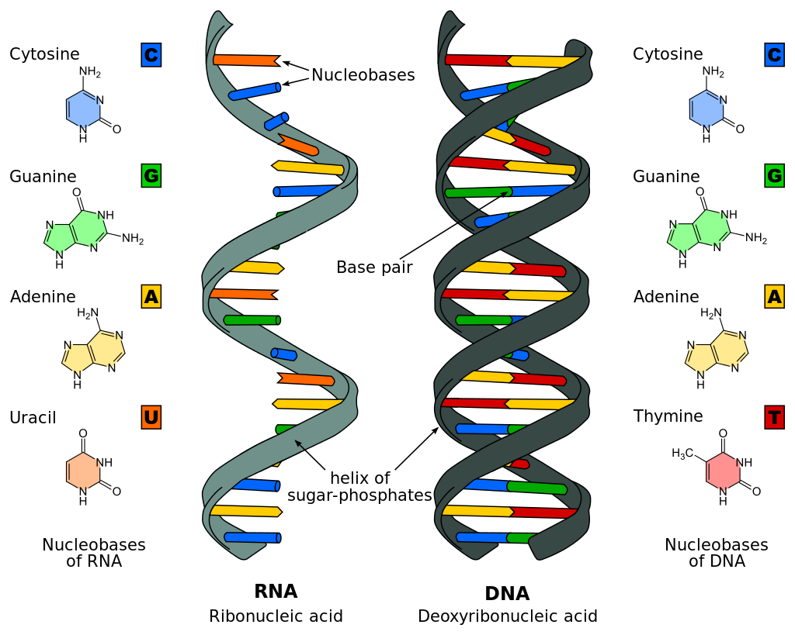
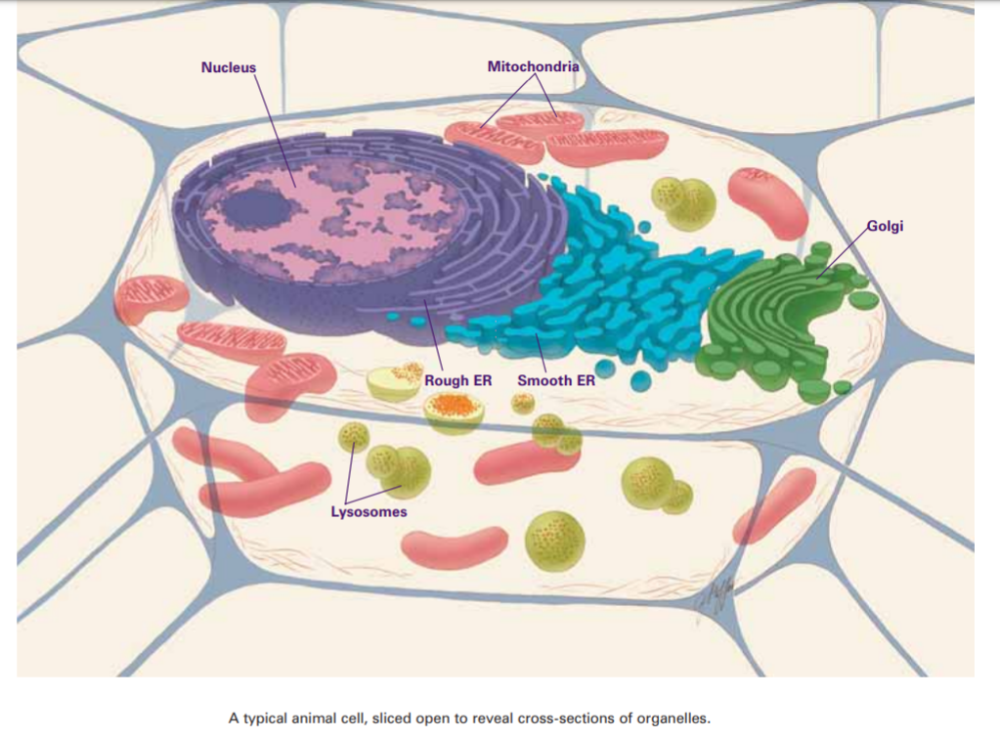

02_membrane of cellOgm
name::
* McsEngl.cellOgm'02_membrane!⇒cellOgm'membrane, /membréin/,
* McsEngl.cellOgm'membrane-001!⇒cellOgm'membrane,
* McsEngl.cellOgm'att001-membrane!⇒cellOgm'membrane,
* McsEngl.cellOgm'membrane,
* McsEngl.membrane-of-cellOgm!⇒cellOgm'membrane,
* McsEngl.cell-membrane!⇒cellOgm'membrane,
* McsEngl.plasma-membrane!⇒cellOgm'membrane,
description::

"The membrane that surrounds a cell is made up of proteins and lipids. Depending on the membrane’s location and role in the body, lipids can make up anywhere from 20 to 80 percent of the membrane, with the remainder being proteins. Cholesterol, which is not found in plant cells, is a type of lipid that helps stiffen the membrane."
[https://www.nigms.nih.gov/education/Booklets/Inside-the-Cell/Documents/Booklet-Inside-the-Cell.pdf#page=22]
===
"The cell membrane, or plasma membrane, is a biological membrane that surrounds the cytoplasm of a cell. In animals, the plasma membrane is the outer boundary of the cell, while in plants and prokaryotes it is usually covered by a cell wall. This membrane serves to separate and protect a cell from its surrounding environment and is made mostly from a double layer of phospholipids, which are amphiphilic (partly hydrophobic and partly hydrophilic). Hence, the layer is called a phospholipid bilayer, or sometimes a fluid mosaic membrane. Embedded within this membrane is a macromolecular structure called the porosome the universal secretory portal in cells and a variety of protein molecules that act as channels and pumps that move different molecules into and out of the cell.[4] The membrane is semi-permeable, and selectively permeable, in that it can either let a substance (molecule or ion) pass through freely, pass through to a limited extent or not pass through at all. Cell surface membranes also contain receptor proteins that allow cells to detect external signaling molecules such as hormones."
[{2020-03-12} https://en.wikipedia.org/wiki/Cell_(biology)#Membrane]
potential of cellOgm'membrane
name::
* McsEngl.cellOgm'membrane'potential,
* McsEngl.membrane-potential,
* McsEngl.membrane-voltage,
description::
"Membrane potential (also transmembrane potential or membrane voltage) is the difference in electric potential between the interior and the exterior of a biological cell. For the exterior of the cell, typical values of membrane potential, normally given in units of millivolts and denoted as mV, range from –40 mV to –80 mV.
All animal cells are surrounded by a membrane composed of a lipid bilayer with proteins embedded in it. The membrane serves as both an insulator and a diffusion barrier to the movement of ions. Transmembrane proteins, also known as ion transporter or ion pump proteins, actively push ions across the membrane and establish concentration gradients across the membrane, and ion channels allow ions to move across the membrane down those concentration gradients. Ion pumps and ion channels are electrically equivalent to a set of batteries and resistors inserted in the membrane, and therefore create a voltage between the two sides of the membrane.
Almost all plasma membranes have an electrical potential across them, with the inside usually negative with respect to the outside.[1] The membrane potential has two basic functions. First, it allows a cell to function as a battery, providing power to operate a variety of "molecular devices" embedded in the membrane. Second, in electrically excitable cells such as neurons and muscle cells, it is used for transmitting signals between different parts of a cell. Signals are generated by opening or closing of ion channels at one point in the membrane, producing a local change in the membrane potential. This change in the electric field can be quickly affected by either adjacent or more distant ion channels in the membrane. Those ion channels can then open or close as a result of the potential change, reproducing the signal.
In non-excitable cells, and in excitable cells in their baseline states, the membrane potential is held at a relatively stable value, called the resting potential. For neurons, typical values of the resting potential range from –70 to –80 millivolts; that is, the interior of a cell has a negative baseline voltage of a bit less than one-tenth of a volt. The opening and closing of ion channels can induce a departure from the resting potential. This is called a depolarization if the interior voltage becomes less negative (say from –70 mV to –60 mV), or a hyperpolarization if the interior voltage becomes more negative (say from –70 mV to –80 mV). In excitable cells, a sufficiently large depolarization can evoke an action potential, in which the membrane potential changes rapidly and significantly for a short time (on the order of 1 to 100 milliseconds), often reversing its polarity. Action potentials are generated by the activation of certain voltage-gated ion channels.
In neurons, the factors that influence the membrane potential are diverse. They include numerous types of ion channels, some of which are chemically gated and some of which are voltage-gated. Because voltage-gated ion channels are controlled by the membrane potential, while the membrane potential itself is influenced by these same ion channels, feedback loops that allow for complex temporal dynamics arise, including oscillations and regenerative events such as action potentials."
[{2020-04-30} https://en.wikipedia.org/wiki/Membrane_potential]
05_genetic-material of cellOgm
name::
* McsEngl.acidNucleic,
* McsEngl.cellOgm'05_matterGenetic!⇒acidNucleic,
* McsEngl.cellOgm'att002-genetic-material!⇒acidNucleic,
* McsEngl.cellOgm'matterGenetic-002!⇒acidNucleic,
* McsEngl.cellOgm'genetic-material-002!⇒acidNucleic,
* McsEngl.chmAcid.012-nucleic!⇒acidNucleic,
* McsEngl.chmAcid.nucleic!⇒acidNucleic,
* McsEngl.nucleic-acid-002!⇒acidNucleic,
* McsEngl.polynucleotide!⇒acidNucleic,
description::

"Two different kinds of genetic material exist: deoxyribonucleic acid (DNA) and ribonucleic acid (RNA). Cells use DNA for their long-term information storage. The biological information contained in an organism is encoded in its DNA sequence.[4] RNA is used for information transport (e.g., mRNA) and enzymatic functions (e.g., ribosomal RNA). Transfer RNA (tRNA) molecules are used to add amino acids during protein translation.
Prokaryotic genetic material is organized in a simple circular bacterial chromosome in the nucleoid region of the cytoplasm. Eukaryotic genetic material is divided into different,[4] linear molecules called chromosomes inside a discrete nucleus, usually with additional genetic material in some organelles like mitochondria and chloroplasts (see endosymbiotic theory).
A human cell has genetic material contained in the cell nucleus (the nuclear genome) and in the mitochondria (the mitochondrial genome). In humans the nuclear genome is divided into 46 linear DNA molecules called chromosomes, including 22 homologous chromosome pairs and a pair of sex chromosomes. The mitochondrial genome is a circular DNA molecule distinct from the nuclear DNA. Although the mitochondrial DNA is very small compared to nuclear chromosomes,[4] it codes for 13 proteins involved in mitochondrial energy production and specific tRNAs.
Foreign genetic material (most commonly DNA) can also be artificially introduced into the cell by a process called transfection. This can be transient, if the DNA is not inserted into the cell's genome, or stable, if it is. Certain viruses also insert their genetic material into the genome."
[https://en.wikipedia.org/wiki/Cell_(biology)#Genetic_material]
===
"Nucleic acids are the biopolymers, or small biomolecules, essential to all known forms of life. The term nucleic acid is the overall name for DNA and RNA. They are composed of nucleotides, which are the monomers made of three components: a 5-carbon sugar, a phosphate group and a nitrogenous base. If the sugar is a compound ribose, the polymer is RNA (ribonucleic acid); if the sugar is derived from ribose as deoxyribose, the polymer is DNA (deoxyribonucleic acid).
Nucleic acids are the most important of all biomolecules. These are found in abundance in all living things, where they function to create and encode and then store information of every living cell of every life-form organism on Earth. In turn, they function to transmit and express that information inside and outside the cell nucleus—to the interior operations of the cell and ultimately to the next generation of each living organism. The encoded information is contained and conveyed via the nucleic acid sequence, which provides the 'ladder-step' ordering of nucleotides within the molecules of RNA and DNA.
Strings of nucleotides are bonded to form helical backbones—typically, one for RNA, two for DNA—and assembled into chains of base-pairs selected from the five primary, or canonical, nucleobases, which are: adenine, cytosine, guanine, thymine, and uracil. Thymine occurs only in DNA and uracil only in RNA. Using amino acids and the process known as protein synthesis,[1] the specific sequencing in DNA of these nucleobase-pairs enables storing and transmitting coded instructions as genes. In RNA, base-pair sequencing provides for manufacturing new proteins that determine the frames and parts and most chemical processes of all life forms."
[{2020-03-25} https://en.wikipedia.org/wiki/Nucleic_acid]
===
"DNA, RNA, and proteins all consist of a repeating structure of related building blocks (nucleotides in the case of DNA and RNA, amino acids in the case of proteins)."
[{2020-03-26} https://en.wikipedia.org/wiki/Macromolecule]
nucleotide of cellOgm
name::
* McsEngl.cellOgm'att026-nucleotide,
* McsEngl.cellOgm'nucleotide-026,
* McsEngl.nucleotide-of-cellOgm-026,
description::
·
gene-product of cellOgm
name::
* McsEngl.cellOgm'att023-gene-product,
* McsEngl.cellOgm'gene-product,
* McsEngl.gene-product-of-cellOgm,
description::
"A gene product is the biochemical material, either RNA or protein, resulting from expression of a gene. A measurement of the amount of gene product is sometimes used to infer how active a gene is. Abnormal amounts of gene product can be correlated with disease-causing alleles, such as the overactivity of oncogenes which can cause cancer.[1][2] A gene is defined as "a hereditary unit of DNA that is required to produce a functional product".[3] Regulatory elements include:
* Promoter region
* TATA box
* Polyadenylation sequences
* Enhancers
These elements work in combination with the open reading frame to create a functional product. This product may be transcribed and be functional as RNA or is translated from mRNA to a protein to be functional in the cell."
[{2020-03-26} https://en.wikipedia.org/wiki/Gene_product]
DNA of cellOgm
name::
* McsEngl.cellOgm'att024-Dna,
* McsEngl.cellOgm'Dna-024,
* McsEngl.Dna-of-cellOgm-024,
description::
"DNA is optimised for encoding information
DNA is an information storage macromolecule that encodes the complete set of instructions (the genome) that are required to assemble, maintain, and reproduce every living organism.[12]
DNA and RNA are both capable of encoding genetic information, because there are biochemical mechanisms which read the information coded within a DNA or RNA sequence and use it to generate a specified protein. On the other hand, the sequence information of a protein molecule is not used by cells to functionally encode genetic information.[1]:5
DNA has three primary attributes that allow it to be far better than RNA at encoding genetic information. First, it is normally double-stranded, so that there are a minimum of two copies of the information encoding each gene in every cell. Second, DNA has a much greater stability against breakdown than does RNA, an attribute primarily associated with the absence of the 2'-hydroxyl group within every nucleotide of DNA. Third, highly sophisticated DNA surveillance and repair systems are present which monitor damage to the DNA and repair the sequence when necessary. Analogous systems have not evolved for repairing damaged RNA molecules. Consequently, chromosomes can contain many billions of atoms, arranged in a specific chemical structure."
[https://en.wikipedia.org/wiki/Macromolecule#DNA_is_optimised_for_encoding_information]
RNA of cellOgm
name::
* McsEngl.cellOgm'att025-Rna,
* McsEngl.cellOgm'Rna-025,
* McsEngl.Rna-cellOgm-025,
description::
"RNA is multifunctional
RNA is multifunctional, its primary function is to encode proteins, according to the instructions within a cell’s DNA.[1]:5 They control and regulate many aspects of protein synthesis in eukaryotes.
RNA encodes genetic information that can be translated into the amino acid sequence of proteins, as evidenced by the messenger RNA molecules present within every cell, and the RNA genomes of a large number of viruses. The single-stranded nature of RNA, together with tendency for rapid breakdown and a lack of repair systems means that RNA is not so well suited for the long-term storage of genetic information as is DNA.
In addition, RNA is a single-stranded polymer that can, like proteins, fold into a very large number of three-dimensional structures. Some of these structures provide binding sites for other molecules and chemically-active centers that can catalyze specific chemical reactions on those bound molecules. The limited number of different building blocks of RNA (4 nucleotides vs >20 amino acids in proteins), together with their lack of chemical diversity, results in catalytic RNA (ribozymes) being generally less-effective catalysts than proteins for most biological reactions."
[{2020-03-26} https://en.wikipedia.org/wiki/Macromolecule#RNA_is_multifunctional]
DOING of cellOgm
name::
* McsEngl.cellOgm'doing,
description::
"At any given time, each cell is doing thousands of jobs. Some of these tasks are so essential for life that they are carried out by virtually all cells. Others are done only by cells that are highly skilled for the work, whether it is covering up your insides (skin cells), preventing you from sloshing around like a pile of goo (bone cells), purging your body of toxic chemicals (liver cells), or enabling you to learn and remember (brain cells). Cells also must make the products your body needs, such as sweat, saliva, enzymes, hormones, and antibodies."
[https://www.nigms.nih.gov/education/Booklets/Inside-the-Cell/Documents/Booklet-Inside-the-Cell.pdf#page=6]
specific-tree-of-cellOgm'doing::
* metabolism,
* motility,
* protein-synthesis,
adhetion of cellOgm
name::
* McsEngl.cellOgm'att037-adhetion,
* McsEngl.cellOgm'adhetion-att037,
description::
"Cell adhesion is the process by which cells interact and attach to neighbouring cells through specialised molecules of the cell surface. This process can occur either through direct contact between cell surfaces or indirect interaction, where cells attach to surrounding extracellular matrix, a gel-like structure containing molecules released by cells into spaces between them.[1] Cells adhesion occurs from the interactions between cell-adhesion molecules (CAMs),[2] transmembrane proteins located on the cell surface. Cell adhesion links cells in different ways and can be involved in signal transduction for cells to detect and respond to changes in the surroundings.[1][3] Other cellular processes regulated by cell adhesion include cell migration and tissue development in multicellular organisms.[4] Alterations in cell adhesion can disrupt important cellular processes and lead to a variety of diseases, including cancer[5][6] and arthritis.[7] Cell adhesion is also essential for infectious organisms, such as bacteria or viruses, to cause diseases.[8][9]"
[{2020-04-30} https://en.wikipedia.org/wiki/Cell_adhesion]
migration of cellOgm
name::
* McsEngl.cellOgm'att036-migration,
* McsEngl.cellOgm'migration-att036,
* McsEngl.cellOgm'motility,
description::
"Cell migration is a central process in the development and maintenance of multicellular organisms. Tissue formation during embryonic development, wound healing and immune responses all require the orchestrated movement of cells in particular directions to specific locations. Cells often migrate in response to specific external signals, including chemical signals and mechanical signals.[1] Errors during this process have serious consequences, including intellectual disability, vascular disease, tumor formation and metastasis. An understanding of the mechanism by which cells migrate may lead to the development of novel therapeutic strategies for controlling, for example, invasive tumour cells.
Due to the highly viscous environment (low Reynolds number), cells need to continuously produce forces in order to move. Cells achieve active movement by very different mechanisms. Many less complex prokaryotic organisms (and sperm cells) use flagella or cilia to propel themselves. Eukaryotic cell migration typically is far more complex and can consist of combinations of different migration mechanisms. It generally involves drastic changes in cell shape which are driven by the cytoskeleton. Two very distinct migration scenarios are crawling motion (most commonly studied) and blebbing motility.[2] A paradigmatic example of crawling motion is the case of fish epidermal keratocytes, which have been extensively used in research and teaching.[3]"
[{2020-04-30} https://en.wikipedia.org/wiki/Cell_migration]
cell-to-cell-interaction of cellOgm
name::
* McsEngl.cellOgm'att035-cell-to-cell-interaction,
* McsEngl.cellOgm'cell-to-cell-interaction-att035,
* McsEngl.cell-to-cell-interaction,
description::
"Cell–cell interaction refers to the direct interactions between cell surfaces that play a crucial role in the development and function of multicellular organisms. These interactions allow cells to communicate with each other in response to changes in their microenvironment. This ability to send and receive signals is essential for the survival of the cell. Interactions between cells can be stable such as those made through cell junctions. These junctions are involved in the communication and organization of cells within a particular tissue. Others are transient or temporary such as those between cells of the immune system or the interactions involved in tissue inflammation. These types of intercellular interactions are distinguished from other types such as those between cells and the extracellular matrix. The loss of communication between cells can result in uncontrollable cell growth and cancer."
[{2020-04-30} https://en.wikipedia.org/wiki/Cell%E2%80%93cell_interaction]
interaction.transient of cellOgm
name::
* McsEngl.cellOgm'att039-interaction.transient,
* McsEngl.cellOgm'interaction.transient-att039,
* McsEngl.transient-interaction-cell-to-cell,
description::
·
DNA-repair of cellOgm
name::
* McsEngl.cellOgm'att010-DNA-repair,
* McsEngl.cellOgm'DNA-repair-010,
description::
"In general, cells of all organisms contain enzyme systems that scan their DNA for damages and carry out repair processes when damages are detected.[23] Diverse repair processes have evolved in organisms ranging from bacteria to humans. The widespread prevalence of these repair processes indicates the importance of maintaining cellular DNA in an undamaged state in order to avoid cell death or errors of replication due to damages that could lead to mutation. E. coli bacteria are a well-studied example of a cellular organism with diverse well-defined DNA repair processes. These include: (1) nucleotide excision repair, (2) DNA mismatch repair, (3) non-homologous end joining of double-strand breaks, (4) recombinational repair and (5) light-dependent repair (photoreactivation)."
[{2020-03-12} https://en.wikipedia.org/wiki/Cell_(biology)#DNA_repair]
metabolism of cellOgm
name::
* McsEngl.cellOgm'att009-metabolism,
* McsEngl.cellOgm'metabolism-009,
description::
"Between successive cell divisions, cells grow through the functioning of cellular metabolism. Cell metabolism is the process by which individual cells process nutrient molecules. Metabolism has two distinct divisions: catabolism, in which the cell breaks down complex molecules to produce energy and reducing power, and anabolism, in which the cell uses energy and reducing power to construct complex molecules and perform other biological functions. Complex sugars consumed by the organism can be broken down into simpler sugar molecules called monosaccharides such as glucose. Once inside the cell, glucose is broken down to make adenosine triphosphate (ATP),[4] a molecule that possesses readily available energy, through two different pathways."
[{2020-03-12} https://en.wikipedia.org/wiki/Cell_(biology)#Growth_and_metabolism]
protein-synthesis of cellOgm
name::
* McsEngl.cellOgm'att007-protein-synthesis,
description::
"Cells are capable of synthesizing new proteins, which are essential for the modulation and maintenance of cellular activities. This process involves the formation of new protein molecules from amino acid building blocks based on information encoded in DNA/RNA. Protein synthesis generally consists of two major steps: transcription and translation.
Transcription is the process where genetic information in DNA is used to produce a complementary RNA strand. This RNA strand is then processed to give messenger RNA (mRNA), which is free to migrate through the cell. mRNA molecules bind to protein-RNA complexes called ribosomes located in the cytosol, where they are translated into polypeptide sequences. The ribosome mediates the formation of a polypeptide sequence based on the mRNA sequence. The mRNA sequence directly relates to the polypeptide sequence by binding to transfer RNA (tRNA) adapter molecules in binding pockets within the ribosome. The new polypeptide then folds into a functional three-dimensional protein molecule."
[https://en.wikipedia.org/wiki/Cell_(biology)#Protein_synthesis]
motility of cellOgm
name::
* McsEngl.cellOgm'att006-motility,
* McsEngl.cellOgm'motility-006,
description::
"Unicellular organisms can move in order to find food or escape predators. Common mechanisms of motion include flagella and cilia.
In multicellular organisms, cells can move during processes such as wound healing, the immune response and cancer metastasis. For example, in wound healing in animals, white blood cells move to the wound site to kill the microorganisms that cause infection. Cell motility involves many receptors, crosslinking, bundling, binding, adhesion, motor and other proteins.[24] The process is divided into three steps – protrusion of the leading edge of the cell, adhesion of the leading edge and de-adhesion at the cell body and rear, and cytoskeletal contraction to pull the cell forward. Each step is driven by physical forces generated by unique segments of the cytoskeleton.[25][26]"
[{2020-03-24} https://en.wikipedia.org/wiki/Cell_(biology)#Motility]
endocytosis of cellOgm
name::
* McsEngl.cellOgm'att019-endocytosis,
* McsEngl.cellOgm'endocytosis,
* McsEngl.endocytosis,
description::
"Endocytosis is a cellular process in which substances are brought into the cell. The material to be internalized is surrounded by an area of cell membrane, which then buds off inside the cell to form a vesicle containing the ingested material. Endocytosis includes pinocytosis (cell drinking) and phagocytosis (cell eating). It is a form of active transport."
[https://en.wikipedia.org/wiki/Endocytosis]
pinocytosis of cellOgm
name::
* McsEngl.cellOgm'att021-pinocytosis,
* McsEngl.cellOgm'pinocytosis,
* McsEngl.pinocytosis,
description::
"In cellular biology, pinocytosis, otherwise known as fluid endocytosis and bulk-phase pinocytosis, is a mode of endocytosis in which small particles suspended in extracellular fluid are brought into the cell through an invagination of the cell membrane, resulting in a suspension of the particles within a small vesicle inside the cell. These pinocytotic vesicles subsequently fuse with endosomes to hydrolyze (break down) the particles.
Pinocytosis is further segregated into the pathways macropinocytosis, clathrin-mediated endocytosis, caveolin-mediated endocytosis, or clathrin- and caveolin-independent endocytosis, all of which differ by the mechanism of vesicle formation as well as the resulting size of these vesicles.
Pinocytosis is variably subdivided into categories depending on molecular mechanism and the fate of the internalized molecules. Pinocytosis is, in some cases, considered to be a constitutive process, while in others it is receptor-mediated and highly regulated. One scheme divides pinocytosis into the four categories of caveolae-mediated, clathrin-dependent, macropinocytosis, and dynamin and clathrin-independent Seto et al (2002)."
[{2020-03-24} https://en.wikipedia.org/wiki/Pinocytosis]
phagocytosis of cellOgm
name::
* McsEngl.cellOgm'att022-phagocytosis,
* McsEngl.cellOgm'phagocytosis,
* McsEngl.phagocytosis,
description::
"Phagocytosis (from Ancient Greek φαγεῖν (phagein) , meaning 'to eat', and κύτος, (kytos) , meaning 'cell') is the process by which a cell uses its plasma membrane to engulf a large particle (≥ 0.5 μm), giving rise to an internal compartment called the phagosome. It is one type of endocytosis.
In a multicellular organism's immune system, phagocytosis is a major mechanism used to remove pathogens and cell debris. The ingested material is then digested in the phagosome. Bacteria, dead tissue cells, and small mineral particles are all examples of objects that may be phagocytized. Some protozoa use phagocytosis as means to obtain nutrients."
[https://en.wikipedia.org/wiki/Phagocytosis]
exocytosis of cellOgm
name::
* McsEngl.cellOgm'att020-exocytosis,
* McsEngl.cellOgm'exocytosis-att020,
* McsEngl.exocytosis,
description::
"Exocytosis (/ˌɛksoʊsaɪˈtoʊsɪs/[1][2]) is a form of active transport and bulk transport in which a cell transports molecules (e.g., neurotransmitters and proteins) out of the cell (exo- + cytosis) by secreting them through an energy-dependent process. Exocytosis and its counterpart, endocytosis, which is basically the reverse process,are used by all cells because most chemical substances important to them are large polar molecules that cannot pass through the hydrophobic portion of the cell membrane by passive means. Exocytosis is in process a large amount of molecules are released thus making it a form of bulk transport.
In exocytosis, membrane-bound secretory vesicles are carried to the cell membrane, and their contents (i.e., water-soluble molecules) are secreted into the extracellular environment. This secretion is possible because the vesicle transiently fuses with the plasma membrane. In the context of neurotransmission, neurotransmitters are typically released from synaptic vesicles into the synaptic cleft via exocytosis; however, neurotransmitters can also be released via reverse transport through membrane transport proteins.
Exocytosis is also a mechanism by which cells are able to insert membrane proteins (such as ion channels and cell surface receptors), lipids, and other components into the cell membrane. Vesicles containing these membrane components fully fuse with and become part of the outer cell membrane."
[{2020-03-24} https://en.wikipedia.org/wiki/Exocytosis]
signaling of cellOgm
name::
* McsEngl.cellOgm'signaling,
* McsEngl.cellOgm'att040-signaling!⇒cellOgm'signaling,
* McsEngl.cellOgm'communication!⇒cellOgm'signaling,
* McsEngl.signaling-of-cellOgm!⇒cellOgm'signaling,
description::
"In biology, cell signaling (cell signalling in British English) is part of any communication process that governs basic activities of cells and coordinates multiple-cell actions. The ability of cells to perceive and correctly respond to their microenvironment is the basis of development, tissue repair, and immunity, as well as normal tissue homeostasis. Errors in signaling interactions and cellular information processing may cause diseases such as cancer, autoimmunity, and diabetes.[1][2][3] By understanding cell signaling, clinicians may treat diseases more effectively and, theoretically, researchers may develop artificial tissues.[4]
Systems biology studies the underlying structure of cell-signaling networks and how changes in these networks may affect the transmission and flow of information (signal transduction). Such networks are complex systems in their organization and may exhibit a number of emergent properties, including bistability and ultrasensitivity. Analysis of cell-signaling networks requires a combination of experimental and theoretical approaches, including the development and analysis of simulations and modeling.[5][6] Long-range allostery is often a significant component of cell-signaling events.[7]
All cells receive and respond to signals from their surroundings. This is accomplished by a variety of signal molecules that are secreted or expressed on the surface of one cell and bind to a receptor expressed by the other cells, thereby integrating and coordinating the function of the many individual cells that make up organisms. Each cell is programmed to respond to specific extracellular signal molecules. Extracellular signaling usually entails the following steps:
1. Synthesis and release of the signaling molecule by the signaling cell;
2. Transport of the signal to the target cell;
3. Binding of the signal by a specific receptor leading to its activation;
4. Initiation of signal-transduction pathways.[8]"
[{2020-05-06} https://en.wikipedia.org/wiki/Cell_signaling]
signaling-cellOgm of cellOgm'signaling
name::
* McsEngl.cellOgm'signaling'signaling-cell,
* McsEngl.cellOgm'signaling'att001-signaling-cell,
description::
·
target-cellOgm of cellOgm'signaling
name::
* McsEngl.cellOgm'signaling'target-cell,
* McsEngl.cellOgm'signaling'att002-target-cell,
description::
·
signal of cellOgm'signaling
name::
* McsEngl.cellOgm'signaling'signal!⇒cellOgm'signal,
* McsEngl.cellOgm'signal,
* McsEngl.cellOgm'signaling'att003-signal!⇒cellOgm'signal,
* McsEngl.signal-of-cellOgm'signaling!⇒cellOgm'signal,
description::
"Cell signaling can be classified as either mechanical or biochemical based on the type of the signal. Mechanical signals are the forces exerted on the cell and the forces produced by the cell. These forces can both be sensed and responded to by the cells.[12] Biochemical signals are biochemical molecules such as proteins, lipids, ions, and gases. These signals can be categorized based on the distance between signaling and responder cells."
[{2020-05-07} https://en.wikipedia.org/wiki/Cell_signaling]
signal.biochemical
name::
* McsEngl.cellOgm'signal.biochemical,
* McsEngl.cellOgm'signal.signaling-molecule,
* McsEngl.cellOgm'signal.001-signaling-molecule,
* McsEngl.cellOgm'signaling'att004-signaling-molecule,
* McsEngl.cellOgm'receptor-ligand,
* McsEngl.cellOgm'att042-receptor-ligand,
* McsEngl.biochemical-signal-of-cellOgm,
* McsEngl.receptor-ligand-of-cellOgm,
* McsEngl.signal-molecule-of-cellOgm,
* McsEngl.signaling-molecule-of-cellOgm,
description::
"Each cell is programmed to respond to specific extracellular signal molecules.
... Biochemical signals are biochemical molecules such as proteins, lipids, ions, and gases.
... Signaling molecules can belong to several chemical classes: lipids, phospholipids, amino acids, monoamines, proteins, glycoproteins, or gases. Signaling molecules binding surface receptors are generally large and hydrophilic (e.g. TRH, Vasopressin, Acetylcholine), while those entering the cell are generally small and hydrophobic (e.g. glucocorticoids, thyroid hormones, cholecalciferol, retinoic acid), but important exceptions to both are numerous, and a same molecule can act both via surface receptor or in an intracrine manner to different effects.[18]
...
* Hormones are the major signaling molecules of the endocrine system, though they often regulate each other's secretion via local signaling (e.g. islet of Langerhans cells), and most are also expressed in tissues for local purposes (e.g. angiotensin) or failing that, structurally related molecules are (e.g. PTHrP).
* Neurotransmitters are signaling molecules of the nervous system, also including neuropeptides and neuromodulators. Neurotransmitters like the catecholamines are also secreted by the endocrine system into the systemic circulation.
* Cytokines are signaling molecules of the immune system, with a primary paracrine or juxtacrine role, though they can during significant immune responses have a strong presence in the circulation, with systemic effect (altering iron metabolism or body temperature). Growth factors can be considered as cytokines or a different class.
...
Molecules that activate (or, in some cases, inhibit) receptors can be classified as hormones, neurotransmitters, cytokines, and growth factors, in general called receptor ligands."
[{2020-05-07} https://en.wikipedia.org/wiki/Cell_signaling]
signal.mechanical
name::
* McsEngl.cellOgm'signal.mechanical,
* McsEngl.cellOgm'signal.002-mechanical,
* McsEngl.mechanical-signal-of-cellOgm,
description::
"Cell signaling can be classified as either mechanical or biochemical based on the type of the signal. Mechanical signals are the forces exerted on the cell and the forces produced by the cell. These forces can both be sensed and responded to by the cells.[12] Biochemical signals are biochemical molecules such as proteins, lipids, ions, and gases. These signals can be categorized based on the distance between signaling and responder cells."
[{2020-05-07} https://en.wikipedia.org/wiki/Cell_signaling]
signal.neurotransmitter (link)
receptor of cellOgm'signaling
name::
* McsEngl.cellOgm'signaling'receptor!⇒cellOgm'receptor,
* McsEngl.cellOgm'signaling'att005-receptor!⇒cellOgm'receptor,
* McsEngl.cellOgm'att041-receptor,!⇒cellOgm'receptor
* McsEngl.cellOgm'receptor,
* McsEngl.receptor-of-cellOgm'signaling!⇒cellOgm'receptor,
description::
"In biochemistry and pharmacology, receptors are chemical structures, composed of protein, that receive and transduce signals that may be integrated into biological systems.[1] These signals are typically[nb 1] chemical messengers which bind to a receptor and cause some form of cellular/tissue response, e.g. a change in the electrical activity of a cell. There are three main ways the action of the receptor can be classified: relay of signal, amplification, or integration.[2] Relaying sends the signal onward, amplification increases the effect of a single ligand, and integration allows the signal to be incorporated into another biochemical pathway.[2] In this sense, a receptor is a protein-molecule that recognizes and responds to endogenous chemical signals. For example, an acetylcholine receptor recognizes and responds to its endogenous ligand, acetylcholine. However, sometimes in pharmacology, the term is also used to include other proteins that are drug targets, such as enzymes, transporters, and ion channels.[citation needed]
Receptor proteins can be classified by their location. Transmembrane receptors include ion channel-linked (ionotropic) receptors, G protein-linked (metabotropic) hormone receptors, and enzyme-linked hormone receptors.[1] Intracellular receptors are those found inside the cell, and include cytoplasmic receptors and nuclear receptors.[1] A molecule that binds to a receptor is called a ligand, and can be a protein or peptide (short protein), or another small molecule such as a neurotransmitter, hormone, pharmaceutical drug, toxin, calcium ion or parts of the outside of a virus or microbe. The endogenously designated -molecule for a particular receptor is referred to as its endogenous ligand. E.g. the endogenous ligand for the nicotinic acetylcholine receptor is acetylcholine but the receptor can also be activated by nicotine[3][4] and blocked by curare.[5] Receptors of a particular type are linked to specific cellular biochemical pathways that correspond to the signal. While numerous receptors are found in most cells, each receptor will only bind with ligands of a particular structure. This has been analogously compared to how locks will only accept specifically shaped keys. When a ligand binds to a corresponding receptor, it activates or inhibits the receptor's associated biochemical pathway."
[{2020-05-09} https://en.wikipedia.org/wiki/Receptor_(biochemistry)]
receptor.external-006
description::
"External receptors that respond to stimuli from outside the body are called exteroreceptors.[3] Exteroreceptors include olfactory receptors (smell), taste receptors, photoreceptors (vision), hair cells (hearing), thermoreceptors (temperature), and a number of different mechanoreceptors (stretch, distortion)."
[{2021-12-23 retrieved} https://en.wikipedia.org/wiki/Sensory_neuron#External_receptors]
name::
* McsEngl.cellOgm'receptor.006-external,
* McsEngl.cellOgm'receptor.external,
* McsEngl.exteroreceptor,
receptor.internal-007
description::
"Internal receptors that respond to changes inside the body are known as interoceptors."
[{2021-12-23 retrieved} https://en.wikipedia.org/wiki/Sensory_neuron#Internal_receptors]
name::
* McsEngl.cellOgm'receptor.007-internal,
* McsEngl.cellOgm'receptor.internal,
receptor.surface-002
name::
* McsEngl.cellOgm'receptor.surface-002,
* McsEngl.cellOgm'receptor.002-surface,
* McsEngl.cellOgm-surface-receptor,
* McsEngl.membrane-receptor,
description::
"Cell surface receptors (membrane receptors, transmembrane receptors) are receptors that are embedded in the plasma membrane of cells. They act in cell signaling by receiving (binding to) extracellular molecules. They are specialized integral membrane proteins that allow communication between the cell and the extracellular space. The extracellular molecules may be hormones, neurotransmitters, cytokines, growth factors, cell adhesion molecules, or nutrients; they react with the receptor to induce changes in the metabolism and activity of a cell. In the process of signal transduction, ligand binding affects a cascading chemical change through the cell membrane."
[{2020-05-09} https://en.wikipedia.org/wiki/Cell_surface_receptor]
receptor.co-receptor
name::
* McsEngl.cellOgm'receptor.co-receptor,
* McsEngl.cellOgm'receptor.009-co-receptor,
* McsEngl.co-receptor-of-cellOgm,
description::
"A co-receptor is a cell surface receptor that binds a signalling molecule in addition to a primary receptor in order to facilitate ligand recognition and initiate biological processes, such as entry of a pathogen into a host cell."
[{2020-05-10} https://en.wikipedia.org/wiki/Co-receptor]
generic-tree-of-co-receptor::
· Co-receptors are proteins that maintain a three-dimensional structure.
receptor.intracellular-003
name::
* McsEngl.cellOgm'receptor.intracellular-003,
* McsEngl.cellOgm'receptor.003-intracellular,
* McsEngl.intracellular-receptor-of-cellOgm,
description::
"Intracellular receptors are receptors located inside the cell rather than on its cell membrane. Classic hormones that use intracellular receptors include thyroid and steroid hormones. Examples are the class of nuclear receptors located in the cell nucleus and cytoplasm and the IP3 receptor located on the endoplasmic reticulum. The ligands that bind to them are usually intracellular second messengers like inositol trisphosphate (IP3) and extracellular lipophilic hormones like steroid hormones. Some intracrine peptide hormones also have intracellular receptors."
[{2020-05-09} https://en.wikipedia.org/wiki/Intracellular_receptor]
receptor.nuclear-001
name::
* McsEngl.cellOgm'receptor.nuclear,
* McsEngl.cellOgm'receptor.001-nuclear,
* McsEngl.nuclear-receptor-of-cellOgm,
description::
"In the field of molecular biology, nuclear receptors are a class of proteins found within cells that are responsible for sensing steroid and thyroid hormones and certain other molecules. In response, these receptors work with other proteins to regulate the expression of specific genes, thereby controlling the development, homeostasis, and metabolism of the organism.
Nuclear receptors have the ability to directly bind to DNA and regulate the expression of adjacent genes, hence these receptors are classified as transcription factors.[2][3] The regulation of gene expression by nuclear receptors generally only happens when a ligand — a molecule that affects the receptor's behavior — is present. More specifically, ligand binding to a nuclear receptor results in a conformational change in the receptor, which, in turn, activates the receptor, resulting in up- or down-regulation of gene expression.
A unique property of nuclear receptors that differentiates them from other classes of receptors is their ability to directly interact with and control the expression of genomic DNA. As a consequence, nuclear receptors play key roles in both embryonic development and adult homeostasis. As discussed below, nuclear receptors may be classified according to either mechanism[4][5] or homology.[6][7],"
[{2020-05-09} https://en.wikipedia.org/wiki/Nuclear_receptor]
receptor.steroid-hormone-004
name::
* McsEngl.cellOgm'receptor.steroid-hormone-004,
* McsEngl.cellOgm'receptor.004-steroid-hormone,
* McsEngl.steroid-hormone-receptor-of-cellOgm,
description::
"Steroid hormone receptors are found in the nucleus, cytosol, and also on the plasma membrane of target cells. They are generally intracellular receptors (typically cytoplasmic or nuclear) and initiate signal transduction for steroid hormones which lead to changes in gene expression over a time period of hours to days. The best studied steroid hormone receptors are members of the nuclear receptor subfamily 3 (NR3) that include receptors for estrogen (group NR3A)[1] and 3-ketosteroids (group NR3C).[2] In addition to nuclear receptors, several G protein-coupled receptors and ion channels act as cell surface receptors for certain steroid hormones."
receptor.immune-005
name::
* McsEngl.cellOgm'receptor.immune-005,
* McsEngl.cellOgm'receptor.005-immune,
* McsEngl.immune-receptor-of-cellOgm,
description::
"An immune receptor (or immunologic receptor) is a receptor, usually on a cell membrane, which binds to a substance (for example, a cytokine) and causes a response in the immune system."
[{2020-05-09} https://en.wikipedia.org/wiki/Immune_receptor]
receptor.nociceptor-008
description::
"Nociceptors respond to potentially damaging stimuli by sending signals to the spinal cord and brain. This process, called nociception, usually causes the perception of pain.[20][21] They are found in internal organs as well as on the surface of the body to "detect and protect".[21] Nociceptors detect different kinds of noxious stimuli indicating potential for damage, then initiate neural responses to withdraw from the stimulus.[21]
* Thermal nociceptors are activated by noxious heat or cold at various temperatures.[21]
* Mechanical nociceptors respond to excess pressure or mechanical deformation, such as a pinch.[21]
* Chemical nociceptors respond to a wide variety of chemicals, some of which signal a response. They are involved in the detection of some spices in food, such as the pungent ingredients in Brassica and Allium plants, which target the sensory neural receptor to produce acute pain and subsequent pain hypersensitivity.[22]"
[{2021-12-23 retrieved} https://en.wikipedia.org/wiki/Sensory_neuron#Nociceptors]
name::
* McsEngl.cellOgm'receptor.008-nociceptor,
* McsEngl.cellOgm'receptor.nociceptor,
* McsEngl.nociceptor,
receiving of cellOgm'signaling
name::
* McsEngl.cellOgm'signaling'receiving,
* McsEngl.cellOgm'signaling'att006-receiving,
description::
"All cells receive and respond to signals from their surroundings. ... Each cell is programmed to respond to specific extracellular signal molecules."
[{2020-05-10} https://en.wikipedia.org/wiki/Cell_signaling]
responding of cellOgm'signaling
name::
* McsEngl.cellOgm'signaling'responding,
* McsEngl.cellOgm'signaling'att007-responding,
* McsEngl.cellOgm'signaling'receptor-activation,
description::
"All cells receive and respond to signals from their surroundings. ... Each cell is programmed to respond to specific extracellular signal molecules."
[{2020-05-10} https://en.wikipedia.org/wiki/Cell_signaling]
signaling-pathway of cellOgm'signaling
name::
* McsEngl.cellOgm'signaling'pathway,
* McsEngl.cellOgm'signaling'att008-pathway,
* McsEngl.signaling-pathway-of-cellOgm,
description::
"However, for many cell surface receptors, ligand-receptor interactions are not directly linked to the cell's response. The activated receptor must first interact with other proteins inside the cell before the ultimate physiological effect of the ligand on the cell's behavior is produced. Often, the behavior of a chain of several interacting cell proteins is altered following receptor activation. The entire set of cell changes induced by receptor activation is called a signal transduction mechanism or pathway.[28]"
[{2020-05-10} https://en.wikipedia.org/wiki/Cell_signaling#Signaling_pathways]
specific-tree-of-::
* https://en.wikipedia.org/wiki/List_of_signalling_pathways,
cellOgm'signaling.between-organisms-001
name::
* McsEngl.cellOgm'signaling.between-organisms,
* McsEngl.cellOgm'signaling.001-between-organisms,
description::
"Cell signaling has been most extensively studied in the context of human diseases and signaling between cells of a single organism. However, cell signaling may also occur between the cells of two different organisms. In many mammals, early embryo cells exchange signals with cells of the uterus.[9] In the human gastrointestinal tract, bacteria exchange signals with each other and with human epithelial and immune system cells.[10] For the yeast Saccharomyces cerevisiae during mating, some cells send a peptide signal (mating factor pheromones) into their environment. The mating factor peptide may bind to a cell surface receptor on other yeast cells and induce them to prepare for mating.[11]
... Molecular signaling can occur between different organisms, whether unicellular or multicellular. The emitting organism produces the signaling molecule, secretes it into the environment, where it diffuses, and it is sensed or internalized by the receiving organism. In some cases of interspecies signaling, the emitting organism can actually be a host of the receiving organism, or vice versa."
[{2020-05-07} https://en.wikipedia.org/wiki/Cell_signaling]
cellOgm'signaling.between-cells-in-one-organism-002
name::
* McsEngl.cellOgm'signaling.one-organism,
* McsEngl.cellOgm'signaling.001-one-organism,
description::
·
cellOgm'signaling.molecular-008
name::
* McsEngl.cellOgm'signaling.molecular,
* McsEngl.cellOgm'signaling.008-molecular,
* McsEngl.molecular-signaling,
description::
·
cellOgm'signaling.intracrine-007
name::
* McsEngl.cellOgm'signaling.intracrine,
* McsEngl.cellOgm'signaling.007-intracrine,
* McsEngl.intracrine-signaling-of-cellOgm,
description::
"Intracrine refers to a hormone that acts inside a cell, regulating intracellular events. In simple terms it means that the cell stimulates itself by cellular production of a factor that acts within the cell. Steroid hormones act through intracellular (mostly nuclear) receptors and, thus, may be considered to be intracrines. In contrast, peptide or protein hormones, in general, act as endocrines, autocrines, or paracrines by binding to their receptors present on the cell surface. Several peptide/protein hormones or their isoforms also act inside the cell through different mechanisms. These peptide/protein hormones, which have intracellular functions, are also called intracrines. The term 'intracrine' is thought to have been coined to represent peptide/protein hormones that also have intracellular actions. To better understand intracrine, we can compare it to paracrine, autocrine and endocrine. Autocrine system deal with the autocrine receptors of a cell allowing for the hormones to bind, which have been secreted from that same cell. Paracrine system is one where nearby cells get hormones from a cell, and change the functioning of those nearby cells. Endocrine system refers to when the hormones from a cell affect another cell that is very distant from the one that released the hormone.
Paracrine physiology has been understood for decades now and the effects of paracrine hormones have been observed when for example, an obesity associate tumor will face the effects of local adipocytes, even if it is not in direct contact with the fat pads in concern.[1] Endocrine physiology on the other hand is a growing field and has had a new area explored, called intracrinology. In intracrinology, the sex steroids produced locally, exert their action in the same cell where they are produced.[2]
The biological effects produced by intracellular actions are referred as intracrine effects, whereas those produced by binding to cell surface receptors are called endocrine, autocrine, or paracrine effects, depending on the origin of the hormone. The intracrine effect of some of the peptide/protein hormones are similar to their endocrine, autocrine, or paracrine effects; however, these effects are different for some other hormones.
Intracrine can also refer to a hormone acting within the cell that synthesizes it.
Examples of intracrine peptide hormones: There are several protein/peptide hormones that are also intracrines. Notable examples that have been described in the references include:
- Peptides of the renin–angiotensin system: angiotensin II and angiotensin (1-7)
- Fibroblast growth factor 2
- Parathyroid hormone-related protein"
[{2020-05-08} https://en.wikipedia.org/wiki/Intracrine]
cellOgm'signaling.autocrine-003
name::
* McsEngl.cellOgm'signaling.autocrine,
* McsEngl.cellOgm'signaling.003-autocrine,
* McsEngl.autocrine-signaling-of-cellOgm,
description::
"Autocrine signaling is a form of cell signaling in which a cell secretes a hormone or chemical messenger (called the autocrine agent) that binds to autocrine receptors on that same cell, leading to changes in the cell.[1] This can be contrasted with paracrine signaling, intracrine signaling, or classical endocrine signaling."
[{2020-05-08} https://en.wikipedia.org/wiki/Autocrine_signaling]
cellOgm'signaling.juxtacrine-004
name::
* McsEngl.cellOgm'signaling.juxtacrine,
* McsEngl.cellOgm'signaling.004-juxtacrine,
* McsEngl.cellOgm'signaling.contact,
* McsEngl.juxtacrine-signaling-of-cellOgm,
description::
"In biology, juxtacrine signalling (or contact-dependent signalling) is a type of cell / cell or cell / extracellular matrix signalling in multicellular organisms that requires close contact. Hence, this stands in contrast to releasing a signaling molecule by diffusion into extracellular space, or the use of long-range conduits like membrane nanotubes and cytonemes (akin to 'bridges'), or the use of extracellular vesicles like exosomes or microvesicles (akin to 'boats'). There are three types of juxtacrine signaling:
1. A membrane ligand (protein, oligosaccharide, lipid) and a membrane protein of two adjacent cells interact.
2. A communicating junction links the intracellular compartments of two adjacent cells, allowing transit of relatively small molecules.
3. An extracellular matrix glycoprotein and a membrane protein interact.
Additionally, in unicellular organisms such as bacteria, juxtacrine signaling refers to interactions by membrane contact. The term "juxtacrine" was originally introduced by Anklesaria et al. (1990) to describe a possible way of signal transduction between TGF alpha and EGFR.[1]
Juxtacrine signaling has been observed for some growth factors, cytokine and chemokine cellular signals, playing an important role in the immune response. It has a critical role in development, particularly of cardiac and neural function. Other types of cell signaling include paracrine signalling and autocrine signalling."
[{2020-05-08} https://en.wikipedia.org/wiki/Juxtacrine_signalling]
signal of juxtacrine-signaling
name::
* McsEngl.juxtacrine-signaling'signal,
description::
·
cellOgm'signaling.paracrine-005
name::
* McsEngl.cellOgm'signaling.paracrine,
* McsEngl.cellOgm'signaling.005-paracrine,
* McsEngl.cellOgm'signaling.near,
* McsEngl.paracrine-signaling-of-cellOgm,
description::
"Paracrine signaling is a form of cell signaling or cell-to-cell communication in which a cell produces a signal to induce changes in nearby cells, altering the behaviour of those cells. Signaling molecules known as paracrine factors diffuse over a relatively short distance (local action), as opposed to cell signaling by endocrine factors, hormones which travel considerably longer distances via the circulatory system; juxtacrine interactions; and autocrine signaling. Cells that produce paracrine factors secrete them into the immediate extracellular environment. Factors then travel to nearby cells in which the gradient of factor received determines the outcome. However, the exact distance that paracrine factors can travel is not certain.
Although paracrine signaling elicits a diverse array of responses in the induced cells, most paracrine factors utilize a relatively streamlined set of receptors and pathways. In fact, different organs in the body - even between different species - are known to utilize a similar sets of paracrine factors in differential development.[1] The highly conserved receptors and pathways can be organized into four major families based on similar structures: fibroblast growth factor (FGF) family, Hedgehog family, Wnt family, and TGF-β superfamily. Binding of a paracrine factor to its respective receptor initiates signal transduction cascades, eliciting different responses."
[{2020-05-08} https://en.wikipedia.org/wiki/Paracrine_signaling]
signal of paracrine-signaling
name::
* McsEngl.paracrine-signaling'signal,
* McsEngl.paracrine-signal,
description::
"Paracrine signals such as retinoic acid target only cells in the vicinity of the emitting cell.[14] Neurotransmitters represent another example of a paracrine signal. Some signaling molecules can function as both a hormone and a neurotransmitter. For example, epinephrine and norepinephrine can function as hormones when released from the adrenal gland and are transported to the heart by way of the blood stream. Norepinephrine can also be produced by neurons to function as a neurotransmitter within the brain.[15] Estrogen can be released by the ovary and function as a hormone or act locally via paracrine or autocrine signaling.[16]
...Synaptic signaling is a special case of paracrine signaling (for chemical synapses) or juxtacrine signaling (for electrical synapses) between neurons and target cells."
[{2020-05-08} https://en.wikipedia.org/wiki/Cell_signaling]
cellOgm'signaling.endocrine-006
name::
* McsEngl.cellOgm'signaling.endocrine,
* McsEngl.cellOgm'signaling.006-endocrine,
* McsEngl.cellOgm'signaling.far,
* McsEngl.endocrine-signaling-of-cellOgm,
description::
"Endocrine signals target distant cells. Endocrine cells produce hormones that travel through the blood to reach all parts of the body."
[{2020-05-08} https://en.wikipedia.org/wiki/Cell_signaling]
signal of endocrine-signaling
name::
* McsEngl.endocrine-signaling'signal,
* McsEngl.endocrine-signal,
description::
"Endocrine signals are called hormones. Hormones are produced by endocrine cells and they travel through the blood to reach all parts of the body. Specificity of signaling can be controlled if only some cells can respond to a particular hormone."
[{2020-05-08} https://en.wikipedia.org/wiki/Cell_signaling]
evoluting of cellOgm
name::
* McsEngl.cellOgm'evoluting,
{time.2020-03-12}::
=== McsHitp-creation:
· creation of current concept.
{time.1962}::
=== prokaryote-eukaryote-division:
"The division between prokaryotes and eukaryotes was firmly established by the microbiologists Roger Stanier and C. B. van Niel in their 1962 paper The concept of a bacterium[10] (though spelled procaryote and eucaryote there). That paper cites Édouard Chatton's 1937 book Titres et Travaux Scientifiques[11] for using those terms and recognizing the distinction. One reason for this classification was so that what was then often called blue-green algae (now called cyanobacteria) would not be classified as plants but grouped with bacteria."
[{2020-03-12} https://en.wikipedia.org/wiki/Prokaryote#History]
{time.1858}::
=== cell-theory:
"19 years later, Rudolf Virchow further contributed to the cell theory, adding that all cells come from the division of pre-existing cells."
[{2020-03-12} https://en.wikipedia.org/wiki/Cell_(biology)]
{time.1839}::
=== cell-theory:
"Cell theory, first developed in 1839 by Matthias Jakob Schleiden and Theodor Schwann, states that all organisms are composed of one or more cells, that cells are the fundamental unit of structure and function in all living organisms, and that all cells come from pre-existing cells."
[{2020-03-12} https://en.wikipedia.org/wiki/Cell_(biology)]
{time.1674}::
=== live-cells:
"A few years later, in 1674, Anton Van Leeuwenhoek was the first to analyze live cells in his examination of algae."
[{2020-03-12} https://en.wikipedia.org/wiki/Cell_biology#History]
{time.1665}::
=== discovery:
"Cells were first seen in 17th century Europe with the invention of the compound microscope. In 1665, Robert Hooke termed the building block of all living organisms as "cells" after looking at a piece of cork and observing a cell-like structure,[2] however, the cells were dead and gave no indication to the actual overall components of a cell."
[{2020-03-12} https://en.wikipedia.org/wiki/Cell_biology#History]
life-cycle of cellOgm
name::
* McsEngl.cellOgm'att033-life-cycle,
* McsEngl.cellOgm'life-cycle-att033,
description::
·
reproduction of cellOgm
name::
* McsEngl.cellOgm'att008-division,
* McsEngl.cellOgm'reproduction-008,
* McsEngl.cellOgm'division-008,
description::
"Cell division involves a single cell (called a mother cell) dividing into two daughter cells. This leads to growth in multicellular organisms (the growth of tissue) and to procreation (vegetative reproduction) in unicellular organisms. Prokaryotic cells divide by binary fission, while eukaryotic cells usually undergo a process of nuclear division, called mitosis, followed by division of the cell, called cytokinesis. A diploid cell may also undergo meiosis to produce haploid cells, usually four. Haploid cells serve as gametes in multicellular organisms, fusing to form new diploid cells.
DNA replication, or the process of duplicating a cell's genome,[4] always happens when a cell divides through mitosis or binary fission. This occurs during the S phase of the cell cycle.
In meiosis, the DNA is replicated only once, while the cell divides twice. DNA replication only occurs before meiosis I. DNA replication does not occur when the cells divide the second time, in meiosis II.[22] Replication, like all cellular activities, requires specialized proteins for carrying out the job.[4]"
[{2020-04-02} https://en.wikipedia.org/wiki/Cell_(biology)#Replication]
death of cellOgm
name::
* McsEngl.cellOgm'att027-death,
* McsEngl.cellOgm'death,
description::
"Cell death is the event of a biological cell ceasing to carry out its functions. This may be the result of the natural process of old cells dying and being replaced by new ones, or may result from such factors as disease, localized injury, or the death of the organism of which the cells are part. Apoptosis or Type I cell-death, and autophagy or Type II cell-death are both forms of programmed cell death, while necrosis is a non-physiological process that occurs as a result of infection or injury.[1]"
[https://en.wikipedia.org/wiki/Cell_death]
programmed-cell-death of cellOgm
name::
* McsEngl.cellOgm'att028-programmed-cell-death,
* McsEngl.cellOgm'programmed-cell-death-att028,
* McsEngl.PCD-programmed-cell-death,
* McsEngl.programmed-cell-death-PCD,
description::
"Programmed cell death (PCD; sometimes referred to as cellular suicide[1]) is the death of a cell in any form mediated by an intracellular program.[2][3] PCD is carried out in a biological process, which usually confers advantage during an organism's life-cycle. For example, the differentiation of fingers and toes in a developing human embryo occurs because cells between the fingers apoptose; the result is that the digits are separate. PCD serves fundamental functions during both plant and animal tissue development.
Apoptosis and autophagy are both forms of programmed cell death.[4] Necrosis is the death of a cell caused by external factors such as trauma or infection and occurs in several different forms. Necrosis was long seen as a non-physiological process that occurs as a result of infection or injury,[4] but in the 2000s, a form of programmed necrosis, called necroptosis,[5] was recognized as an alternative form of programmed cell death. It is hypothesized that necroptosis can serve as a cell-death backup to apoptosis when the apoptosis signaling is blocked by endogenous or exogenous factors such as viruses or mutations. Most recently, other types of regulated necrosis have been discovered as well, which share several signaling events with necroptosis and apoptosis.[6]"
[https://en.wikipedia.org/wiki/Programmed_cell_death]
specific-tree-of-::
* apoptosis,
* autophagy,
* feroptosis,
apoptosis of cellOgm
name::
* McsEngl.cellOgm'att030-apoptosis,
* McsEngl.cellOgm'apoptosis-att030,
* McsEngl.apoptosis-cellOgm-att030,
description::
"Apoptosis (from Ancient Greek ἀπόπτωσις, apóptōsis, "falling off") is a form of programmed cell death that occurs in multicellular organisms.[2] Biochemical events lead to characteristic cell changes (morphology) and death. These changes include blebbing, cell shrinkage, nuclear fragmentation, chromatin condensation, chromosomal DNA fragmentation, and global[vague] mRNA decay. The average adult human loses between 50 and 70 billion cells each day due to apoptosis.[3][a] For an average human child between the ages of 8 and 14, approximately 20–30 billion cells die per day.[5]
In contrast to necrosis, which is a form of traumatic cell death that results from acute cellular injury, apoptosis is a highly regulated and controlled process that confers advantages during an organism's life cycle. For example, the separation of fingers and toes in a developing human embryo occurs because cells between the digits undergo apoptosis. Unlike necrosis, apoptosis produces cell fragments called apoptotic bodies that phagocytic cells are able to engulf and remove before the contents of the cell can spill out onto surrounding cells and cause damage to them.[6]
Because apoptosis cannot stop once it has begun, it is a highly regulated process. Apoptosis can be initiated through one of two pathways. In the intrinsic pathway the cell kills itself because it senses cell stress, while in the extrinsic pathway the cell kills itself because of signals from other cells. Weak external signals may also activate the intrinsic pathway of apoptosis.[7] Both pathways induce cell death by activating caspases, which are proteases, or enzymes that degrade proteins. The two pathways both activate initiator caspases, which then activate executioner caspases, which then kill the cell by degrading proteins indiscriminately.
Research on apoptosis has increased substantially since the early 1990s. In addition to its importance as a biological phenomenon, defective apoptotic processes have been implicated in a wide variety of diseases. Excessive apoptosis causes atrophy, whereas an insufficient amount results in uncontrolled cell proliferation, such as cancer. Some factors like Fas receptors and caspases promote apoptosis, while some members of the Bcl-2 family of proteins inhibit apoptosis."
[{2020-04-02} https://en.wikipedia.org/wiki/Apoptosis]
autophagy of cellOgm
name::
* McsEngl.cellOgm'att031-autophagy, /otófaji/,
description::
"Autophagy (or autophagocytosis) (from the Ancient Greek αὐτόφαγος autóphagos, meaning "self-devouring"[1] and κύτος kýtos, meaning "hollow"[2]) is the natural, regulated mechanism of the cell that removes unnecessary or dysfunctional components.[3] It allows the orderly degradation and recycling of cellular components.[4][5]
Three forms of autophagy are commonly described: macroautophagy, microautophagy, and chaperone-mediated autophagy (CMA). In macroautophagy, expendable cytoplasmic constituents are targeted and isolated from the rest of the cell within a double-membraned vesicle known as an autophagosome,[6][7] which, in time, fuses with an available lysosome, bringing its specialty process of waste management and disposal; and eventually the contents of the vesicle (now called an autolysosome) are degraded and recycled.
In disease, autophagy has been seen as an adaptive response to stress, promoting survival of the cell; but in other cases it appears to promote cell death and morbidity. In the extreme case of starvation, the breakdown of cellular components promotes cellular survival by maintaining cellular energy levels.
The word "autophagy" was in existence and frequently used from the middle of the 19th century.[8] In its present usage, the term autophagy was coined by Belgian biochemist Christian de Duve in 1963 based on his discovery of the functions of lysosome.[3] The identification of autophagy-related genes in yeast in the 1990s allowed researchers to deduce the mechanisms of autophagy,[9][10][11][12][13] which eventually led to the award of the 2016 Nobel Prize in Physiology or Medicine to Japanese researcher Yoshinori Ohsumi.[14]"
[{2020-04-02} https://en.wikipedia.org/wiki/Autophagy]
feroptosis of cellOgm
name::
* McsEngl.cellOgm'att032-feroptosis, /feroptósis/,
description::
"Ferroptosis is a type of programmed cell death dependent on iron and characterized by the accumulation of lipid peroxides, and is genetically and biochemically distinct from other forms of regulated cell death such as apoptosis.[1] Ferroptosis is initiated by the failure of the glutathione-dependent antioxidant defenses, resulting in unchecked lipid peroxidation and eventual cell death.[2] Lipophilic antioxidants[3] and iron chelators can prevent ferroptotic cell death. Although the connection between lipid peroxidation has been appreciated for years, it was not until 2012 that Brent Stockwell and Scott Dixon coined the term ferroptosis and described several of its key features.[4]
Researchers have identified roles in which ferroptosis can contribute to the medical field such as in aiding in cancer treatments where this form of cell death can be induced in the human body.[5] Ferroptosis activation plays a regulatory role on growth of tumor cells in the human body. However, the positive effects of ferroptosis could be potentially neutralized by its disruption of metabolic pathways and disruption of homeostasis in the human body.[6] Since ferroptosis is a form of regulated cell death, some of the molecules that regulate ferroptosis are involved in metabolic pathways that regulate cysteine exploitation, glutathione state, nicotinamide adenine dinucleotide phosphate function, lipid peroxidation and iron homeostasis.[6]"
[{2020-04-02} https://en.wikipedia.org/wiki/Ferroptosis]
info-resource of ferroptosis
name::
* McsEngl.ferroptosis'Infrsc,
description::
"Ισχυρό αντικαρκινικό «όπλο» χάρη στην επίλυση μοριακού «μυστηρίου»
Τετάρτη, 01 Απριλίου 2020 14:00 UPD:14:17
Τον δρόμο για νέους τρόπους αντιμετώπισης καρκινικών όγκων ανοίγει νέα έρευνα, με αντικείμενο τη μετατροπή μιας ουσίας σε εξαιρετικά αποτελεσματικό «φονιά» του καρκίνου.
Όταν ο Τζέικ Ίτον εντάχθηκε στην ομάδα του εργαστηρίου του Στούαρτ Σράιμπερ, στο Broadn Institute των ΜΙΤ και Χάρβαρντ το 2015, άρχισε να ασχολείται με κάποιες «εξωτικές» θεωρίες των συναδέλφων του. Οι θεωρίες αυτές εστίαζαν σε ένα περίεργο μικρό μόριο ονόματι ML210, το οποίο μπορεί να σκοτώνει κύτταρα ενεργοποιώντας μια κυτταρική διαδικασία ονόματι σιδηρόπτωση (ferroptosis). Η Βασάνθι Βισβαναθάν, μεταδιδακτορική στο εργαστήριο, είχε ανακαλύψει πως η πρόκληση σιδηρόπτωσης μπορεί να σκοτώσει κάποια ανθεκτικά σε φάρμακα καρκινικά κύτταρα. Οι Ίτον, Βισβαναθάν και Σράιμπερ πίστευαν πως η κατανόηση του τρόπου με τον οποίο το ML210 προκαλεί αυτή τη διαδικασία θα μπορούσε να «ξεκλειδώσει» μυστικά για την ανάπτυξη φαρμάκων για την αντιμετώπιση καρκίνων που σήμερα παρουσιάζονται ανθεκτικοί σε υπάρχουσες θεραπείες- ή να αποτρέπει την εμφάνιση αντοχών εξαρχής.
Ο Ίτον και οι συνάδελφοί του ήξεραν πως το ML210 προκαλεί σιδηρόπτωση εμποδίζοντας το GPX4, μια πρωτεΐνη η οποία προστατεύει κύτταρα από οξειδωτικό στρες, και εκτιμούσαν πως το έκανε σχηματίζοντας έναν συγκεκριμένο τύπο χημικού συνδέσμου με την πρωτεΐνη. Το πρόβλημα ήταν πως η χημική δομή του ML210 δεν έδειχνε εμφανείς τρόπος σχηματισμού τέτοιων συνδέσμων, με αποτέλεσμα να υπάρχουν μόνο εικασίες σχετικά με το πώς ακριβώς επιτυγχανόταν η δέσμευση του GPX4- σύμφωνα με τον Ίτον, επρόκειτο για ένα πραγματικό «χημικό μυστήριο».
Μετά από χρόνια δουλειάς, επιστήμονες στο Broad Institute σε συνεργασία με επιστήμονες της Bayer έλυσαν το μυστήριο αυτό: όπως δείχνουν σε έρευνα που δημοσιεύτηκε στο Nature Chemical Biology, το ML210 μεταμορφώνεται εντός του κυττάρου σε ένα νέο μόριο, που μεταμορφώνεται σε ένα τρίτο μόριο το οποίο μετά δεσμεύει το GPX4. Ο μηχανισμός που εντοπίστηκε είναι πολύ ασυνήθιστος και επιδεικνύει έναν τρόπο με τον οποίο «pro-drugs» σαν το ML210 μπορούν να μετατρέπονται σε μόρια ικανά να δεσμεύουν πρωτεΐνες- στόχους εντός κυττάρων.
Στο πλαίσιο της έρευνας, οι επιστήμονες περιγράφουν ένα νέο σετ ενώσεων που οι επιστήμονες μπορούν να χρησιμοποιήσουν για να μάθουν σχετικά με το πώς τα κύτταρα βιώνουν σιδηρόπτωση-μια διαδικασία που ανακαλύφθηκε μόλις μια εβδομάδα πριν. Επιπρόσθετα, τα μόρια αποτελούν σημεία έναρξης για την ανάπτυξη ενώσεων που μπορούν να περιορίζουν το GPX4 και σκοτώνουν τα ανθεκτικά καρκινικά κύτταρα όχι μόνο στο εργαστήριο, αλλά και σε μοντέλα ζώων ή και σε ανθρώπους ασθενείς.
Εάν τα εν λόγω μόρια ή παραλλαγές τους αποδειχθούν αποτελεσματικά, τότε εκτιμάται πως θα μπορούσαν να οδηγήσουν σε μια νέα κατηγορία φαρμάκων, που θα μπορούσαν να χρησιμοποιούνται κατά των όγκων που εμφανίζονται σήμερα ανθεκτικοί στα φάρμακα."
[https://www.naftemporiki.gr/story/1585510/isxuro-antikarkiniko-oplo-xari-stin-epilusi-moriakou-mustiriou]
necrosis of cellOgm
name::
* McsEngl.cellOgm'att029-necrosis, /nekrósis/,
* McsEngl.cellOgm'necrosis-att029,
description::
"Necrosis (from Ancient Greek νέκρωσις, nékrōsis, "death") is a form of cell injury which results in the premature death of cells in living tissue by autolysis.[1] Necrosis is caused by factors external to the cell or tissue, such as infection, toxins, or trauma which result in the unregulated digestion of cell components. In contrast, apoptosis is a naturally occurring programmed and targeted cause of cellular death. While apoptosis often provides beneficial effects to the organism, necrosis is almost always detrimental and can be fatal.[2]
Cellular death due to necrosis does not follow the apoptotic signal transduction pathway, but rather various receptors are activated and result in the loss of cell membrane integrity and an uncontrolled release of products of cell death into the extracellular space.[1] This initiates in the surrounding tissue an inflammatory response, which attracts leukocytes and nearby phagocytes which eliminate the dead cells by phagocytosis. However, microbial damaging substances released by leukocytes would create collateral damage to surrounding tissues.[3] This excess collateral damage inhibits the healing process. Thus, untreated necrosis results in a build-up of decomposing dead tissue and cell debris at or near the site of the cell death. A classic example is gangrene. For this reason, it is often necessary to remove necrotic tissue surgically, a procedure known as debridement."
[{2020-04-02} https://en.wikipedia.org/wiki/Necrosis]
WHOLE-PART-TREE of cellOgm
name::
* McsEngl.cellOgm'whole-part-tree,
whole-tree-of-cellOgm::
*
* ... Sympan.
part-tree-of-cellOgm::
* ,
GENERIC-SPECIFIC-TREE of cellOgm
name::
* McsEngl.cellOgm'generic-specific-tree,
generic-tree-of-cellOgm::
* mtrlObject,
* ... entity.
specific-tree-of-cellOgm::
* human-cell,
===
* eukaryotic-cell,
* prokaryotic-cell,
===
* unicellular-organism,
* multinucleate-cell,
cellOgm.prokaryotic-002
name::
* McsEngl.cellOgm.002-prokaryotic,
* McsEngl.cellOgm.prokaryotic-002,
* McsEngl.prokaryotic-cellOgm-002,
* McsEngl.ogm.002-prokaryote,
* McsEngl.ogm.prokaryote-002,
* McsEngl.prokaryote-ogm-002,
description::
"There are two fundamental classifications of cells: prokaryotic and eukaryotic. Prokaryotic cells are distinguished from eukaryotic cells by the absence of a cell nucleus or other membrane bound organelle.[8] Prokaryotic cells are much smaller than eukaryotic cells, making them the smallest form of life.[9] The study of eukaryotic cells is typically the main focus of cytologists, whereas prokaryotic cells are the focus of microbiologists."
[{2020-03-12} https://en.wikipedia.org/wiki/Cell_biology#Cell_classification_and_composition]
===
"A prokaryote is a unicellular organism that lacks a membrane-bound nucleus, mitochondria, or any other membrane-bound organelle.[1] The word prokaryote comes from the Greek πρό (pro, 'before') and κάρυον (karyon, 'nut' or 'kernel').[2][3] Prokaryotes are divided into two domains, Archaea and Bacteria. Species with nuclei and organelles are placed in the third domain, Eukaryota.[4] Prokaryotes are asexual, reproducing without fusion of gametes. The first living organisms are thought to have been prokaryotes. The term prokaryote however is now used informally to refer to bacteria and archaea as in the late 1970s Carl Woese determined that bacteria and archaea were less closely related than previously thought.[5]
In the prokaryotes, all the intracellular water-soluble components (proteins, DNA and metabolites) are located together in the cytoplasm enclosed by the cell membrane, rather than in separate cellular compartments. Bacteria, however, do possess protein-based bacterial microcompartments, which are thought to act as primitive organelles enclosed in protein shells.[6][7] Some prokaryotes, such as cyanobacteria, may form large colonies. Others, such as myxobacteria, have multicellular stages in their life cycles.[8]
Molecular studies have provided insight into the evolution and interrelationships of the three domains of biological species.[9] Eukaryotes are organisms, including humans, whose cells have a well defined membrane-bound nucleus (containing chromosomal DNA) and organelles. The division between prokaryotes and eukaryotes reflects the existence of two very different levels of cellular organization. Distinctive types of prokaryotes include extremophiles and methanogens; these are common in some extreme environments.[1]"
[{2020-03-12} https://en.wikipedia.org/wiki/Prokaryote]
cellOgm.eukaryotic-003
name::
* McsEngl.cellEukaryotic,
* McsEngl.cellOgm.003-eukaryotic,
* McsEngl.cellOgm.eukaryotic-003,
* McsEngl.eukaryotic-cellOgm-003,
description::
"Plants, animals, fungi, slime moulds, protozoa, and algae are all eukaryotic. These cells are about fifteen times wider than a typical prokaryote and can be as much as a thousand times greater in volume. The main distinguishing feature of eukaryotes as compared to prokaryotes is compartmentalization: the presence of membrane-bound organelles (compartments) in which specific activities take place. Most important among these is a cell nucleus,[4] an organelle that houses the cell's DNA. This nucleus gives the eukaryote its name, which means "true kernel (nucleus)". Other differences include:
* The plasma membrane resembles that of prokaryotes in function, with minor differences in the setup. Cell walls may or may not be present.
* The eukaryotic DNA is organized in one or more linear molecules, called chromosomes, which are associated with histone proteins. All chromosomal DNA is stored in the cell nucleus, separated from the cytoplasm by a membrane.[4] Some eukaryotic organelles such as mitochondria also contain some DNA.
* Many eukaryotic cells are ciliated with primary cilia. Primary cilia play important roles in chemosensation, mechanosensation, and thermosensation. Each cilium may thus be "viewed as a sensory cellular antennae that coordinates a large number of cellular signaling pathways, sometimes coupling the signaling to ciliary motility or alternatively to cell division and differentiation."[15]
* Motile eukaryotes can move using motile cilia or flagella. Motile cells are absent in conifers and flowering plants.[16] Eukaryotic flagella are more complex than those of prokaryotes.[17]"
[{2020-03-12} https://en.wikipedia.org/wiki/Cell_(biology)#Eukaryotic_cells]
nucleus of cellEukaryotic
name::
* McsEngl.cellEukaryotic'nucleus,
description::
"In cell biology, the nucleus (pl. nuclei; from Latin nucleus or nuculeus, meaning kernel or seed) is a membrane-bound organelle found in eukaryotic cells. Eukaryotes usually have a single nucleus, but a few cell types, such as mammalian red blood cells, have no nuclei, and a few others including osteoclasts have many.
The cell nucleus contains all of the cell's genome, except for a small fraction of mitochondrial DNA, organized as multiple long linear DNA molecules in a complex with a large variety of proteins, such as histones, to form chromosomes. The genes within these chromosomes are structured in such a way to promote cell function. The nucleus maintains the integrity of genes and controls the activities of the cell by regulating gene expression—the nucleus is, therefore, the control center of the cell. The main structures making up the nucleus are the nuclear envelope, a double membrane that encloses the entire organelle and isolates its contents from the cellular cytoplasm, and the nuclear matrix (which includes the nuclear lamina), a network within the nucleus that adds mechanical support, much like the cytoskeleton, which supports the cell as a whole.
Because the nuclear envelope is impermeable to large molecules, nuclear pores are required to regulate nuclear transport of molecules across the envelope. The pores cross both nuclear membranes, providing a channel through which larger molecules must be actively transported by carrier proteins while allowing free movement of small molecules and ions. Movement of large molecules such as proteins and RNA through the pores is required for both gene expression and the maintenance of chromosomes. Although the interior of the nucleus does not contain any membrane-bound subcompartments, its contents are not uniform, and a number of nuclear bodies exist, made up of unique proteins, RNA molecules, and particular parts of the chromosomes. The best-known of these is the nucleolus, which is mainly involved in the assembly of ribosomes. After being produced in the nucleolus, ribosomes are exported to the cytoplasm where they translate mRNA."
[{2020-03-12} https://en.wikipedia.org/wiki/Cell_nucleus]
cellOgm.animal-004
name::
* McsEngl.cellOgm.004-animal,
* McsEngl.cellOgm.animal-004,
* McsEngl.cellAnimal,
* McsEngl.cellAnml,
* McsEngl.animal-cellOgm-004,
description::

===
Components of a typical animal cell:
01. Nucleolus,
02. Nucleus,
03. Ribosome (little dots),
04. Vesicle,
05. Rough endoplasmic reticulum,
06. Golgi apparatus (or "Golgi body"),
07. Cytoskeleton,
08. Smooth endoplasmic reticulum,
09. Mitochondrion,
10. Vacuole,
11. Cytosol (fluid that contains organelles, comprising the, cytoplasm),
12. Lysosome,
13. Centrosome,
14. Cell membrane,
[{2020-03-12} https://en.wikipedia.org/wiki/Cell_nucleus]
lysosome of cellAnimal
name::
* McsEngl.cellAnimal'lysosome, /laisosom/,
* McsEngl.lysosome-of-cellAnimal,
description::
"A lysosome (/ˈlaɪsəˌsoʊm/) is a membrane-bound organelle found in many animal cells.[1] They are spherical vesicles that contain hydrolytic enzymes that can break down many kinds of biomolecules. A lysosome has a specific composition, of both its membrane proteins, and its lumenal proteins. The lumen's pH (~4.5–5.0)[2] is optimal for the enzymes involved in hydrolysis, analogous to the activity of the stomach. Besides degradation of polymers, the lysosome is involved in various cell processes, including secretion, plasma membrane repair, apoptosis, cell signaling, and energy metabolism.[3]
Lysosomes act as the waste disposal system of the cell by digesting obsolete or un-used materials in the cytoplasm, from both inside and outside the cell. Material from outside the cell is taken-up through endocytosis, while material from the inside of the cell is digested through autophagy.[5] The sizes of the organelles vary greatly—the larger ones can be more than 10 times the size of the smaller ones.[6] They were discovered and named by Belgian biologist Christian de Duve, who eventually received the Nobel Prize in Physiology or Medicine in 1974.
Lysosomes are known to contain more than 60 different enzymes, and have more than 50 membrane proteins.[7][8] Enzymes of the lysosomes are synthesised in the rough endoplasmic reticulum. The enzymes are imported from the Golgi apparatus in small vesicles, which fuse with larger acidic vesicles. Enzymes destined for a lysosome are specifically tagged with the molecule mannose 6-phosphate, so that they are properly sorted into acidified vesicles.[9][10]
Synthesis of lysosomal enzymes is controlled by nuclear genes. Mutations in the genes for these enzymes are responsible for more than 30 different human genetic disorders, which are collectively known as lysosomal storage diseases. These diseases result from an accumulation of specific substrates, due to the inability to break them down. These genetic defects are related to several neurodegenerative disorders, cancers, cardiovascular diseases, and aging-related diseases.[11][12] [13]
Lysosomes should not be confused with liposomes, or with micelles."
[{2020-05-13} https://en.wikipedia.org/wiki/Lysosome]
WHOLE-PART-TREE of cellAnimal
name::
* McsEngl.cellAnimal'whole-part-tree,
whole-tree-of-cellAnimal::
* tissueAnimal,
part-tree-of-cellAnimal::
* cell-membrane,
* centrosome,
* cytoskeleton,
* cytosol (fluid that contains organelles, comprising the, cytoplasm),
* golgi-apparatus (or "Golgi body"),
* lysosome,
* mitochondrion,
* nucleolus,
* nucleus,
* ribosome (little dots),
* rough endoplasmic reticulum,
* smooth endoplasmic reticulum,
* vacuole,
* vesicle,
===
* no cell-wall,
wholeNo-tree-of-cellAnimal::
* ,
GENERIC-SPECIFIC-TREE of cellAnimal
name::
* McsEngl.cellAnimal'generic-specific-tree,
generic-tree-of-cellAnimal::
*
* ... entity,
att-inherited-from::
· :
* ,
att-own-of-cellAnimal::
* ,
specific-tree-of-cellAnimal::
* ,
cellAnimal.brain-002
description::
"More glia (supporting brain cells)
There are two major cell types in the brain: neurones, the more widely recognised brain cell, and glia, the lesser-known brain cell. Neurones transmit messages containing complex information through and out of the brain, which lead to outputs by the body such as muscle activity. Glia are the supportive cells of neurones, helping to dispose of their waste and feed them vital nutrients and signalling molecules.
Arguably one of the cleverest humans, Albert Einstein, had a higher ratio of glia-to-neurones (i.e. more glia) than that of the doctors’ brains his was compared to. Furthermore, animal studies determine that, as intellect rises, the glia-to-neurone ratio also increases. Therefore, an indicator of brainpower could be an individual’s glia-to-neurone ratio, possibly because each neurone receives more glial attention and so operates more efficiently. If this were deemed an accurate measure of intelligence, the Minke whale would be the smartest species, having the highest glia-to-brain ratio of any species – 5.5 times greater than humans’."
[{2020-08-23} https://www.sciencefocus.com/nature/animal-brains-v-human-brains-let-the-battle-of-the-brains-commence/]
name::
* McsEngl.brain-cell-of-animal!⇒cellAnimalBrain,
* McsEngl.brainNatural'att003-cell!⇒cellAnimalBrain,
* McsEngl.brainNatural'cell!⇒cellAnimalBrain,
* McsEngl.cellAnimal.002-brain!⇒cellAnimalBrain,
* McsEngl.cellAnimal.brain!⇒cellAnimalBrain,
* McsEngl.cellAnimalBrain,
* McsEngl.cellBrainAnimal!⇒cellAnimalBrain,
cellAnimal.phagocyte-001
name::
* McsEngl.cellAnimal.001-phagocyte,
* McsEngl.cellAnimal.phagocyte-001,
* McsEngl.phagocyte-cellAnimal-001,
description::
"Phagocytes are cells that protect the body by ingesting harmful foreign particles, bacteria, and dead or dying cells. Their name comes from the Greek phagein, "to eat" or "devour", and "-cyte", the suffix in biology denoting "cell", from the Greek kutos, "hollow vessel".[1] They are essential for fighting infections and for subsequent immunity.[2] Phagocytes are important throughout the animal kingdom[3] and are highly developed within vertebrates.[4] One litre of human blood contains about six billion phagocytes.[5] They were discovered in 1882 by Ilya Ilyich Mechnikov while he was studying starfish larvae.[6] Mechnikov was awarded the 1908 Nobel Prize in Physiology or Medicine for his discovery.[7] Phagocytes occur in many species; some amoebae behave like macrophage phagocytes, which suggests that phagocytes appeared early in the evolution of life.[8]
Phagocytes of humans and other animals are called "professional" or "non-professional" depending on how effective they are at phagocytosis.[9] The professional phagocytes include many types of white blood cells (such as neutrophils, monocytes, macrophages, mast cells, and dendritic cells).[10] The main difference between professional and non-professional phagocytes is that the professional phagocytes have molecules called receptors on their surfaces that can detect harmful objects, such as bacteria, that are not normally found in the body.[11] Phagocytes are crucial in fighting infections, as well as in maintaining healthy tissues by removing dead and dying cells that have reached the end of their lifespan.[12]
During an infection, chemical signals attract phagocytes to places where the pathogen has invaded the body. These chemicals may come from bacteria or from other phagocytes already present. The phagocytes move by a method called chemotaxis. When phagocytes come into contact with bacteria, the receptors on the phagocyte's surface will bind to them. This binding will lead to the engulfing of the bacteria by the phagocyte.[13] Some phagocytes kill the ingested pathogen with oxidants and nitric oxide.[14] After phagocytosis, macrophages and dendritic cells can also participate in antigen presentation, a process in which a phagocyte moves parts of the ingested material back to its surface. This material is then displayed to other cells of the immune system. Some phagocytes then travel to the body's lymph nodes and display the material to white blood cells called lymphocytes. This process is important in building immunity,[15] and many pathogens have evolved methods to evade attacks by phagocytes.[2]"
[{2020-04-02} https://en.wikipedia.org/wiki/Phagocyte]
cellOgm.plant-005
name::
* McsEngl.cellOgm.005-plant,
* McsEngl.cellOgm.plant-005,
* McsEngl.cellPlant,
* McsEngl.ogmPlant'att014-cell,
* McsEngl.ogmPlant'cell-att014,
* McsEngl.plant-cellOgm-005,
description::

[https://upload.wikimedia.org/wikipedia/commons/d/d8/Plant_cell_structure-en.svg]
Plant cells are eukaryotic cells present in green plants, photosynthetic eukaryotes of the kingdom Plantae. Their distinctive features include primary cell walls containing cellulose, hemicelluloses and pectin, the presence of plastids with the capability to perform photosynthesis and store starch, a large vacuole that regulates turgor pressure, the absence of flagella or centrioles, except in the gametes, and a unique method of cell division involving the formation of a cell plate or phragmoplast that separates the new daughter cells.
[{2020-03-13} https://en.wikipedia.org/wiki/Plant_cell]
WHOLE-PART-TREE of cellPlant
name::
* McsEngl.cellPlant'whole-part-tree,
whole-tree-of-cellPlant::
* plant-tissue,
part-tree-of-cellPlant::
* cell wall,
* chloroplast,
* cytoplasm,
* cytoskeleton,
* golgi apparatus (Golgi body),
* golgi vesicles,
* mitochondrion,
* nuclear envelope,
* nuclear pore,
* nucleolus,
* nucleus,
* peroxisome,
* plasma membrane,
* plasmodesmata,
* ribosome,
* rough endoplasmic reticulum,
* small membranous vesicles,
* smooth endoplasmic reticulum,
* starch grain,
* thylakoid membrane,
* tonoplast,
* vacuole,
wholeNo-tree-of-cellPlant::
* ,
GENERIC-SPECIFIC-TREE of cellPlant
name::
* McsEngl.cellPlant'generic-specific-tree,
generic-tree-of-cellPlant::
* cellEukariotic,
* ... entity,
att-inherited-from::
· cellEukaryotic:
* ,
att-own-of-cellPlant::
* ,
specific-tree-of-cellPlant::
* ,
cellOgm.unicellular-organism-006
name::
* McsEngl.cellOgm.006-unicellular-organism!⇒ogmCellOne,
* McsEngl.cellOgm.unicellular-organism-006!⇒ogmCellOne,
* McsEngl.ogmCellOne,
* McsEngl.ogm.003-cellOne!⇒ogmCellOne,
* McsEngl.ogm.cellOne-003!⇒ogmCellOne,
* McsEngl.single-celled-organism!⇒ogmCellOne,
* McsEngl.unicellular-organism!⇒ogmCellOne,
description::
"A unicellular organism, also known as a single-celled organism, is an organism that consists of a single cell, unlike a multicellular organism that consists of multiple cells. Unicellular organisms fall into two general categories: prokaryotic organisms and eukaryotic organisms. Prokaryotes include bacteria and archaea. Many eukaryotes are multicellular, but the group includes the protozoa, unicellular algae, and unicellular fungi. Unicellular organisms are thought to be the oldest form of life, with early protocells possibly emerging 3.8–4 billion years ago.[1][2]
Although some prokaryotes live in colonies, they are not specialised cells with differing functions. These organisms live together, and each cell must carry out all life processes to survive. In contrast, even the simplest multicellular organisms have cells that depend on each other to survive.
Most multicellular organisms have a unicellular life-cycle stage. Gametes, for example, are reproductive unicells for multicellular organisms.[3] Additionally, multicellularity appears to have evolved independently many times in the history of life.
Some organisms are partially unicellular, like Dictyostelium discoideum. Additionally, unicellular organisms can be multinucleate, like Caulerpa, Plasmodium, and Myxogastria."
[https://en.wikipedia.org/wiki/Unicellular_organism]
GENERIC-SPECIFIC-TREE of ogmCellOne
name::
* McsEngl.ogmCellOne'generic-specific-tree,
generic-tree-of-ogmCellOne::
* cell,
* organism,
* ... entity,
att-inherited-from::
· :
* ,
att-own-of-ogmCellOne::
* ,
specific-tree-of-ogmCellOne::
* prokaryote-bacteria,
* prokaryote-archaea,
* eukaryote-protozoa,
* eukaryote-unicellular-algae,
* eukaryote-unicellular-fungi,
===
* microscopic-ogmCellOne,
* macroscopic-ogmCellOne,
cellOgm.archeaon-007
name::
* McsEngl.cellOgm.007-archeon!⇒ogmArcheon,
* McsEngl.cellOgm.archeon-007!⇒ogmArcheon,
* McsEngl.ogmArcheon, /arkíon/,
* McsEngl.ogm.004-archeon!⇒ogmArcheon,
* McsEngl.ogm.archeon-004!⇒ogmArcheon,
* McsEngl.archeon-ogm-004!⇒ogmArcheon,
description::
"Archaea (/ɑːrˈkiːə/ or /ɑːrˈkeɪə/ ar-KEE-ə or ar-KAY-ə) (singular archaeon) constitute a domain of single-celled organisms. These microorganisms lack cell nuclei and are therefore prokaryotes. Archaea were initially classified as bacteria, receiving the name archaebacteria (in the Archaebacteria kingdom), but this classification is outmoded. They have been renamed to clarify that archaea are not only not bacteria, but are more closely related to eukaryotes (life whose cells can have a nucleus, including humans) than to real bacteria.[6]
Archaeal cells have unique properties separating them from the other two domains, Bacteria and Eukaryota. Archaea are further divided into multiple recognized phyla. Classification is difficult because most have not been isolated in the laboratory and have only been detected by analysis of their nucleic acids in samples from their environment.
Archaea and bacteria are generally similar in size and shape, although a few archaea have very different shapes, such as the flat and square cells of Haloquadratum walsbyi.[7] Despite this morphological similarity to bacteria, archaea possess genes and several metabolic pathways that are more closely related to those of eukaryotes, notably for the enzymes involved in transcription and translation. Other aspects of archaeal biochemistry are unique, such as their reliance on ether lipids in their cell membranes,[8] including archaeols. Archaea use more energy sources than eukaryotes: these range from organic compounds, such as sugars, to ammonia, metal ions or even hydrogen gas. Salt-tolerant archaea (the Haloarchaea) use sunlight as an energy source, and other species of archaea fix carbon, but unlike plants and cyanobacteria, no known species of archaea does both. Archaea reproduce asexually by binary fission, fragmentation, or budding; unlike bacteria, no known species of Archaea forms endospores.
The first observed archaea were extremophiles, living in extreme environments, such as hot springs and salt lakes with no other organisms. Improved detection tools led to the discovery of archaea in almost every habitat, including soil, oceans, and marshlands. Archaea are particularly numerous in the oceans, and the archaea in plankton may be one of the most abundant groups of organisms on the planet.
Archaea are a major part of Earth's life. They are part of the microbiota of all organisms. In the human microbiota, they are important in the gut, mouth, and on the skin.[9] They may play roles in the carbon cycle and the nitrogen cycle.
No clear examples of archaeal pathogens or parasites are known. Instead they are often mutualists or commensals, such as the methanogens (methane-producing strains) that inhabit the gastrointestinal tract in humans and ruminants, where their vast numbers aid digestion. Methanogens are also used in biogas production and sewage treatment, and biotechnology exploits enzymes from extremophile archaea that can endure high temperatures and organic solvents."
[{2020-03-13} https://en.wikipedia.org/wiki/Archaea]
cellOgm.bacterium-008
name::
* McsEngl.cellOgm.008-bacterium!⇒ogmBacterium,
* McsEngl.cellOgm.bacterium-008!⇒ogmBacterium,
* McsEngl.ogmBacterium,
* McsEngl.ogm.005-bacterium!⇒ogmBacterium,
* McsEngl.ogm.bacterium-005!⇒ogmBacterium,
* McsEngl.bacterium-ogm-005!⇒ogmBacterium,
description::
"Bacteria (/bækˈtɪəriə/ (About this soundlisten); common noun bacteria, singular bacterium) are a type of biological cell. They constitute a large domain of prokaryotic microorganisms. Typically a few micrometres in length, bacteria have a number of shapes, ranging from spheres to rods and spirals. Bacteria were among the first life forms to appear on Earth, and are present in most of its habitats. Bacteria inhabit soil, water, acidic hot springs, radioactive waste,[4] and the deep biosphere of the earth's crust. Bacteria also live in symbiotic and parasitic relationships with plants and animals. Most bacteria have not been characterised, and only about 27 percent of the bacterial phyla have species that can be grown in the laboratory.[5] The study of bacteria is known as bacteriology, a branch of microbiology.
Virtually all animal life on earth is dependent on bacteria for their survival as only bacteria and some archea possess the genes and enzymes necessary to synthesize vitamin B12, also known as cobalamin, and provide it through the food chain. Vitamin B12 is a water-soluble vitamin that is involved in the metabolism of every cell of the human body. It is a cofactor in DNA synthesis, and in both fatty acid and amino acid metabolism. It is particularly important in the normal functioning of the nervous system via its role in the synthesis of myelin.[6][7][8][9]
There are typically 40 million bacterial cells in a gram of soil and a million bacterial cells in a millilitre of fresh water. There are approximately 5×1030 bacteria on Earth,[10] forming a biomass which exceeds that of all plants and animals.[11] Bacteria are vital in many stages of the nutrient cycle by recycling nutrients such as the fixation of nitrogen from the atmosphere. The nutrient cycle includes the decomposition of dead bodies; bacteria are responsible for the putrefaction stage in this process.[12] In the biological communities surrounding hydrothermal vents and cold seeps, extremophile bacteria provide the nutrients needed to sustain life by converting dissolved compounds, such as hydrogen sulphide and methane, to energy.
In humans and most animals the largest number of bacteria exist in the gut, and a large number on the skin.[13] The vast majority of the bacteria in the body are rendered harmless by the protective effects of the immune system, though many are beneficial, particularly in the gut flora. However, several species of bacteria are pathogenic and cause infectious diseases, including cholera, syphilis, anthrax, leprosy, and bubonic plague. The most common fatal bacterial diseases are respiratory infections. Tuberculosis alone kills about 2 million people per year, mostly in sub-Saharan Africa.[14] Antibiotics are used to treat bacterial infections and are also used in farming, making antibiotic resistance a growing problem. In industry, bacteria are important in sewage treatment and the breakdown of oil spills, the production of cheese and yogurt through fermentation, the recovery of gold, palladium, copper and other metals in the mining sector,[15] as well as in biotechnology, and the manufacture of antibiotics and other chemicals.[16]
Once regarded as plants constituting the class Schizomycetes ("fission fungi"), bacteria are now classified as prokaryotes. Unlike cells of animals and other eukaryotes, bacterial cells do not contain a nucleus and rarely harbour membrane-bound organelles. Although the term bacteria traditionally included all prokaryotes, the scientific classification changed after the discovery in the 1990s that prokaryotes consist of two very different groups of organisms that evolved from an ancient common ancestor. These evolutionary domains are called Bacteria and Archaea.[1]"
[{2020-03-13} https://en.wikipedia.org/wiki/Bacteria]
cellOgm.neuron-009
name::
* McsEngl.cellOgm.009-neuron!⇒cellNeuronOgm,
* McsEngl.cellOgm.neuron-009!⇒cellNeuronOgm,
* McsEngl.cellNeuronOgm,
* McsEngl.neuronOgm!⇒cellNeuronOgm,
* McsEngl.neuron-cellOgm!⇒cellNeuronOgm,
description::
"A neuron, neurone (old British spelling) or nerve cell, is an electrically excitable cell[1] that communicates with other cells via specialized connections called synapses. It is the main component of nervous tissue in all animals except sponges and placozoa. Plants and fungi do not have nerve cells.
Neurons are typically classified into three types based on their function. Sensory neurons respond to stimuli such as touch, sound, or light that affect the cells of the sensory organs, and they send signals to the spinal cord or brain. Motor neurons receive signals from the brain and spinal cord to control everything from muscle contractions to glandular output. Interneurons connect neurons to other neurons within the same region of the brain or spinal cord. A group of connected neurons is called a neural circuit.
A typical neuron consists of a cell body (soma), dendrites, and a single axon. The soma is usually compact. The axon and dendrites are filaments that extrude from it. Dendrites typically branch profusely and extend a few hundred micrometers from the soma. The axon leaves the soma at a swelling called the axon hillock, and travels for as far as 1 meter in humans or more in other species. It branches but usually maintains a constant diameter. At the farthest tip of the axon's branches are axon terminals, where the neuron can transmit a signal across the synapse to another cell. Neurons may lack dendrites or have no axon. The term neurite is used to describe either a dendrite or an axon, particularly when the cell is undifferentiated.
Most neurons receive signals via the dendrites and soma and send out signals down the axon. At the majority of synapses, signals cross from the axon of one neuron to a dendrite of another. However, synapses can connect an axon to another axon or a dendrite to another dendrite.
The signaling process is partly electrical and partly chemical. Neurons are electrically excitable, due to maintenance of voltage gradients across their membranes. If the voltage changes by a large enough amount over a short interval, the neuron generates an all-or-nothing electrochemical pulse called an action potential. This potential travels rapidly along the axon, and activates synaptic connections as it reaches them. Synaptic signals may be excitatory or inhibitory, increasing or reducing the net voltage that reaches the soma.
In most cases, neurons are generated by neural stem cells during brain development and childhood. Neurogenesis largely ceases during adulthood in most areas of the brain. However, strong evidence supports generation of substantial numbers of new neurons in the hippocampus and olfactory bulb.[2][3]"
01_disease of cellNeuronOgm
name::
* McsEngl.cellNeuronOgm'01_disease,
* McsEngl.cellNeuronOgm'att001-disease,
* McsEngl.cellNeuronOgm'disease-att001,
* McsEngl.dssOgm.005-cellNeuronOgm,
* McsEngl.dssOgm.cellNeuronOgm-005,
description::
·
02_soma of cellNeuronOgm
name::
* McsEngl.cellNeuronOgm'02_soma,
* McsEngl.cellNeuronOgm'att002-soma,
* McsEngl.cellNeuronOgm'soma-att002,
description::
·
03_neurite of cellNeuronOgm
name::
* McsEngl.cellNeuronOgm'03_neurite,
* McsEngl.cellNeuronOgm'att003-neurite,
* McsEngl.cellNeuronOgm'neurite-att003,
description::
·
04_axon of cellNeuronOgm
name::
* McsEngl.cellNeuronOgm'04_axon,
* McsEngl.cellNeuronOgm'att004-axon,
* McsEngl.cellNeuronOgm'axon-att004,
description::
·
05_dendrite of cellNeuronOgm
name::
* McsEngl.cellNeuronOgm'05_dendrite,
* McsEngl.cellNeuronOgm'att005-dendrite,
* McsEngl.cellNeuronOgm'dendrite-att005,
description::
·
06_synapse of cellNeuronOgm
name::
* McsEngl.cellNeuronOgm'06_synapse,
* McsEngl.cellNeuronOgm'att006-synapse,
* McsEngl.cellNeuronOgm'synapse-att006,
description::
·
synapseOgm.electric
name::
* McsEngl.synapseOgm.electric,
description::
"An electrical synapse is a mechanical and electrically conductive link between two neighboring neurons that is formed at a narrow gap between the pre- and postsynaptic neurons known as a gap junction. At gap junctions, such cells approach within about 3.8 nm of each other,[1] a much shorter distance than the 20- to 40-nanometer distance that separates cells at chemical synapse.[2] In many animals, electrical synapse-based systems co-exist with chemical synapses.
Compared to chemical synapses, electrical synapses conduct nerve impulses faster, but, unlike chemical synapses, they lack gain—the signal in the postsynaptic neuron is the same or smaller than that of the originating neuron. The fundamental bases for perceiving electrical synapses comes down to the connexons that are located in the gap junction between two neurons. Electrical synapses are often found in neural systems that require the fastest possible response, such as defensive reflexes. An important characteristic of electrical synapses is that they are mostly bidirectional (allow impulse transmission in either direction).[3][4]"
[{2020-05-01} https://en.wikipedia.org/wiki/Electrical_synapse]
synapseOgm.chemical
name::
* McsEngl.synaplseOgm.chemical,
description::
"Chemical synapses are biological junctions through which neurons' signals can be sent to each other and to non-neuronal cells such as those in muscles or glands. Chemical synapses allow neurons to form circuits within the central nervous system. They are crucial to the biological computations that underlie perception and thought. They allow the nervous system to connect to and control other systems of the body.
At a chemical synapse, one neuron releases neurotransmitter molecules into a small space (the synaptic cleft) that is adjacent to another neuron. The neurotransmitters are contained within small sacs called synaptic vesicles, and are released into the synaptic cleft by exocytosis. These molecules then bind to neurotransmitter receptors on the postsynaptic cell. Finally, the neurotransmitters are cleared from the synapse through one of several potential mechanisms including enzymatic degradation or re-uptake by specific transporters either on the presynaptic cell or on some other neuroglia to terminate the action of the neurotransmitter.
The adult human brain is estimated to contain from 1014 to 5 × 1014 (100–500 trillion) synapses.[1] Every cubic millimeter of cerebral cortex contains roughly a billion (short scale, i.e. 109) of them.[2] The number of synapses in the human cerebral cortex has separately been estimated at 0.15 quadrillion (150 trillion)[3]
The word "synapse" comes from "synaptein", which Sir Charles Scott Sherrington and colleagues coined from the Greek "syn-" ("together") and "haptein" ("to clasp"). Chemical synapses are not the only type of biological synapse: electrical and immunological synapses also exist. Without a qualifier, however, "synapse" commonly refers to chemical synapse."
[{2020-05-01} https://en.wikipedia.org/wiki/Chemical_synapse]
07_membrane of cellNeuronOgm
name::
* McsEngl.cellNeuronOgm'07_membrane,
* McsEngl.cellNeuronOgm'membrane,
* McsEngl.cellNeuronOgm'att008-membrane,
description::
"Like all animal cells, the cell body of every neuron is enclosed by a plasma membrane, a bilayer of lipid molecules with many types of protein structures embedded in it. A lipid bilayer is a powerful electrical insulator, but in neurons, many of the protein structures embedded in the membrane are electrically active. These include ion channels that permit electrically charged ions to flow across the membrane and ion pumps that chemically transport ions from one side of the membrane to the other. Most ion channels are permeable only to specific types of ions. Some ion channels are voltage gated, meaning that they can be switched between open and closed states by altering the voltage difference across the membrane. Others are chemically gated, meaning that they can be switched between open and closed states by interactions with chemicals that diffuse through the extracellular fluid. The ion materials include sodium, potassium, chloride, and calcium. The interactions between ion channels and ion pumps produce a voltage difference across the membrane, typically a bit less than 1/10 of a volt at baseline. This voltage has two functions: first, it provides a power source for an assortment of voltage-dependent protein machinery that is embedded in the membrane; second, it provides a basis for electrical signal transmission between different parts of the membrane."
[{2020-05-04} https://en.wikipedia.org/wiki/Neuron#Membrane]
info-resource of cellNeuronOgm
name::
* McsEngl.cellNeuronOgm'Infrsc,
description::
·
structure of cellNeuronOgm
name::
* McsEngl.cellNeuronOgm'structure,
description::
·
DOING of cellNeuronOgm
name::
* McsEngl.cellNeuronOgm'doing,
description::
·
nerve-impulse of cellNeuronOgm
name::
* McsEngl.cellNeuronOgm'nerve-impulse,
* McsEngl.cellNeuronOgm'att007-nerve-impulse,
* McsEngl.cellNeuronOgm'nerve-impulse-att007,
description::
"The signaling process is partly electrical and partly chemical. Neurons are electrically excitable, due to maintenance of voltage gradients across their membranes. If the voltage changes by a large enough amount over a short interval, the neuron generates an all-or-nothing electrochemical pulse called an action potential. This potential travels rapidly along the axon, and activates synaptic connections as it reaches them. Synaptic signals may be excitatory or inhibitory, increasing or reducing the net voltage that reaches the soma."
[{2020-05-02} https://en.wikipedia.org/wiki/Neuron]
evoluting of cellNeuronOgm
name::
* McsEngl.cellNeuronOgm'evoluting,
description::
·
cellNeuronOgm.sensory-001
name::
* McsEngl.cellNeuronOgm.001sensory!⇒neuronSensoryOgm,
* McsEngl.cellNeuronOgm.sensory-001!⇒neuronSensoryOgm,
* McsEngl.afferent-neuron-of-ogm!⇒neuronSensoryOgm,
* McsEngl.neuronSensoryOgm,
description::
"Sensory neurons, also known as afferent neurons, are neurons in the central nervous system, that convert a specific type of stimulus, via their receptors, into action potentials or graded potentials.[1] This process is called sensory transduction. The cell bodies of the sensory neurons are located in the dorsal ganglia of the spinal cord.[2]
This sensory information travels along afferent nerve fibers in an afferent or sensory nerve, to the brain via the spinal cord. The stimulus can come from extoreceptors outside the body, for example light and sound, or from interoreceptors inside the body, for example blood pressure or the sense of body position.
Different types of sensory neurons have different sensory receptors that respond to different kinds of stimuli."
[{2020-04-24} https://en.wikipedia.org/wiki/Sensory_neuron]
cellNeuronOgm.motor-002
name::
* McsEngl.cellNeuronOgm.002-motor!⇒neuronMotorOgm,
* McsEngl.cellNeuronOgm.motor-002!⇒neuronMotorOgm,
* McsEngl.neuronMotorOgm,
description::
"A motor neuron (or motoneuron) is a neuron whose cell body is located in the motor cortex, brainstem or the spinal cord, and whose axon (fiber) projects to the spinal cord or outside of the spinal cord to directly or indirectly control effector organs, mainly muscles and glands.[1] There are two types of motor neuron – upper motor neurons and lower motor neurons. Axons from upper motor neurons synapse onto interneurons in the spinal cord and occasionally directly onto lower motor neurons.[2] The axons from the lower motor neurons are efferent nerve fibers that carry signals from the spinal cord to the effectors.[3] Types of lower motor neurons are alpha motor neurons, beta motor neurons, and gamma motor neurons.
A single motor neuron may innervate many muscle fibres and a muscle fibre can undergo many action potentials in the time taken for a single muscle twitch. Innervation takes place at a neuromuscular junction and twitches can become superimposed as a result of summation or a tetanic contraction. Individual twitches can become indistinguishable, and tension rises smoothly eventually reaching a plateau.[4]"
[{2020-04-24} https://en.wikipedia.org/wiki/Motor_neuron]
cellNeuronOgm.interneuron-003
name::
* McsEngl.cellNeuronOgm.003-interneuron!⇒neuronInterOgm,
* McsEngl.cellNeuronOgm.interneuron-003!⇒neuronInterOgm,
* McsEngl.interneuron-of-ogm-003!⇒neuronInterOgm,
* McsEngl.neuronInterOgm,
description::
"Interneurons (also called internuncial neurons, relay neurons, association neurons, connector neurons, intermediate neurons or local circuit neurons) are neurons that connect two brain regions, i.e. not direct motor neurons or sensory neurons. Interneurons are the central nodes of neural circuits, enabling communication between sensory or motor neurons and the central nervous system (CNS).[citation needed] They play vital roles in reflexes, neuronal oscillations,[2] and neurogenesis in the adult mammalian brain.
Interneurons can be further broken down into two groups: local interneurons and relay interneurons.[3][need quotation to verify] Local interneurons have short axons and form circuits with nearby neurons to analyze small pieces of information.[4] Relay interneurons have long axons and connect circuits of neurons in one region of the brain with those in other regions.[4] The interaction between interneurons allow the brain to perform complex functions such as learning, and decision-making."
[{2020-04-24} https://en.wikipedia.org/wiki/Interneuron]
cellNeuronOgm.unipolar-004
name::
* McsEngl.cellNeuronOgm.004-unipolar,
description::
"A unipolar neuron is a type of neuron in which only one process called a neurite extends from the cell body.[2] Most neurons are multipolar, generating several dendrites and an axon and there are also many bipolar neurons. Unipolar neurons that begin as bipolar neurons during development are known as pseudounipolar neurons.[citation needed]
Unipolar neurons are common in insects, where the cell body is often located at the periphery of the brain and is electrically inactive. These cell bodies often send a single neurite into the brain; however, this neurite may ramify into many branches making a very complex set of connections with other neurites, in regions of neuropil.
In mammals, unipolar brush cells are neurons that are specific to the cerebellum, and the granule region of the dorsal cochlear nucleus.
In all species, including vertebrates and invertebrates, many types of primary sensory neurons are pseudounipolar. Typically these have special structures for transducing some type of physical stimulus (light, sound, temperature, etc.) into electrical activity, no dendrites, and a single axon that conveys the resulting signals into the spinal cord or brain."
[{2020-04-29} https://en.wikipedia.org/wiki/Unipolar_neuron]
cellNeuronOgm.bipolar-005
name::
* McsEngl.cellNeuronOgm.005-bipolar,
* McsEngl.cellNeuronOgm.bipolar-005,
description::
"A bipolar neuron, or bipolar cell, is a type of neuron that has two extensions (one axon and one dendrite). Many bipolar cells are specialized sensory neurons for the transmission of sense. As such, they are part of the sensory pathways for smell, sight, taste, hearing, touch, balance and proprioception. The other shape classifications of neurons include unipolar, pseudounipolar and multipolar. During embryonic development, pseudounipolar neurons begin as bipolar in shape but become pseudounipolar as they mature.[1]
Common examples are the retina bipolar cell, the ganglia of the vestibulocochlear nerve,[2] the extensive use of bipolar cells to transmit efferent (motor) signals to control muscles, olfactory receptor neurons in the olfactory epithelium for smell (axons form the olfactory nerve), and neurons in the spiral ganglion for hearing (CN VIII)."
[{2020-04-29} https://en.wikipedia.org/wiki/Bipolar_neuron]
cellNeuronOgm.multipolar-006
name::
* McsEngl.cellNeuronOgm.006-multipolar,
* McsEngl.cellNeuronOgm.multipolar-006,
description::
"A multipolar neuron is a type of neuron that possesses a single axon and many dendrites (and dendritic branches), allowing for the integration of a great deal of information from other neurons. These processes are projections from the neuron cell body. Multipolar neurons constitute the majority of neurons in the central nervous system. They include motor neurons and interneurons/relaying neurons are most commonly found in the cortex of the brain and the spinal cord. Peripherally, multipolar neurons are found in autonomic ganglia."
[{2020-04-29} https://en.wikipedia.org/wiki/Multipolar_neuron]
cellNeuronOgm.head-directed-007
name::
* McsEngl.cellNeuronOgm.007-head-directed,
* McsEngl.cellNeuronOgm.head-directed,
description::
"Head direction (HD) cells are neurons found in a number of brain regions that increase their firing rates above baseline levels only when the animal's head points in a specific direction. They have been reported in rats,[1] monkeys,[2] mice,[3] chinchillas[4] and bats,[5] but are thought to be common to all mammals, perhaps all vertebrates and perhaps even some invertebrates,[6] and to underlie the "sense of direction". When the animal's head is facing in the cell's "preferred firing direction" these neurons fire at a steady rate (i.e., they do not show adaptation), but firing decreases back to baseline rates as the animal's head turns away from the preferred direction (usually about 45° away from this direction).[7]"
[{2020-05-03} https://en.wikipedia.org/wiki/Head_direction_cells]
cellNeuronOgm.pyramidal-008
name::
* McsEngl.cellNeuronOgm.pyramidal, /pirámidal/,
* McsEngl.cellNeuronOgm.008-pyramidal,
* McsEngl.pyramidal-cellNeuronOgm,
description::
"Pyramidal cells, or pyramidal neurons, are a type of multipolar neuron found in areas of the brain including the cerebral cortex, the hippocampus, and the amygdala. Pyramidal neurons are the primary excitation units of the mammalian prefrontal cortex and the corticospinal tract. Pyramidal neurons are also one of two cell types where the characteristic sign, Negri bodies, are found in post-mortem rabies infection.[1] Pyramidal neurons were first discovered and studied by Santiago Ramón y Cajal.[2][3] Since then, studies on pyramidal neurons have focused on topics ranging from neuroplasticity to cognition."
[{2020-05-03} https://en.wikipedia.org/wiki/Pyramidal_cell]
cellNeuronOgm.place-009
name::
* McsEngl.cellNeuronOgm.place,
* McsEngl.cellNeuronOgm.009-place,
* McsEngl.place-cellNeuronOgm,
description::
"A place cell is a kind of pyramidal neuron within the hippocampus that becomes active when an animal enters a particular place in its environment, which is known as the place field. Place cells are thought, collectively, to act as a cognitive representation of a specific location in space, known as a cognitive map.[1] Place cells work with other types of neurons in the hippocampus and surrounding regions to perform this kind of spatial processing.[2] They have been found in a variety of animals, including rodents, bats, monkeys and humans."
[{2020-05-03} https://en.wikipedia.org/wiki/Place_cell]
cellNeuronOgm.grid-010
name::
* McsEngl.cellNeuronOgm.grid,
* McsEngl.cellNeuronOgm.010-grid,
* McsEngl.grid-cellNeuronOgm,
description::
"A grid cell is a type of neuron within the entorhinal cortex that fires at regular intervals as an animal navigates an open area, allowing it to understand its position in space by storing and integrating information about location, distance, and direction.[1] Grid cells have been found in many animals, including rats,[1] mice,[2] bats,[3] monkeys,[4] and humans."
[{2020-05-03} https://en.wikipedia.org/wiki/Grid_cell]
cellOgm.stem-010
name::
* McsEngl.cellOgm.010-stem,
* McsEngl.cellOgm.stem-010,
* McsEngl.stem-cellOgm-010,
description::
"In multicellular organisms, stem cells are undifferentiated or partially differentiated cells that can differentiate into various types of cells and divide indefinitely to produce more of the same stem cell. They are the earliest type of cell in a cell lineage.[1] They are found in both embryonic and adult organisms, but they have slightly different properties in each. They are usually distinguished from progenitor cells, which cannot divide indefinitely, and precursor or blast cells, which are usually committed to differentiating into one cell type.
In mammals, the roughly 50–150 cells that make up the inner cell mass during the blastocyst stage of embryonic development, around days 5–14, have stem-cell capability. In vivo, they eventually differentiate into all of the body's cell types (i.e., they are pluripotent). This process starts with the differentiation into the three germ layers – the ectoderm, mesoderm and endoderm – at the gastrulation stage. However, when they are isolated and cultured in vitro, they can be kept in the stem-cell stage and are known as embryonic stem cells (ESCs).
Adult stem cells are found in a few select locations in the body, known as niches, such as those in the bone marrow or gonads. They exist to replenish rapidly lost cell types and are multipotent or unipotent, meaning they only differentiate into a few cell types or one cell type. In mammals, they include, among others, hematopoietic stem cells, which replenish blood and immune cells, basal cells, which maintain the skin epithelium, and mesenchymal stem cells, which maintain bone, cartilage, muscle and fat cells. Adult stem cells constitute a small minority of cells; they are vastly outnumbered by the progenitor cells and terminally differentiated cells that they differentiate into.[1]
Research into stem cells grew out of findings by Canadian biologists Ernest A. McCulloch and James E. Till at the University of Toronto in the 1960s.[2][3] As of 2016, the only established medical therapy using stem cells is hematopoietic stem cell transplantation,[4] first performed in 1958 by French oncologist Georges Mathé. Since 1998, it has been possible to culture and differentiate human embryonic stem cells (in stem-cell lines). The process of isolating these cells has been controversial, because it typically results in the destruction of the embryo. Sources for isolating ESCs have been restricted in some European countries and Canada, but others such as the UK and China have promoted the research.[5] Somatic cell nuclear transfer is a cloning method that can be used to create a cloned embryo for the use of its embryonic stem cells in stem cell therapy.[6] In 2006, a Japanese team led by Shinya Yamanaka discovered a method to convert mature body cells back into stem cells. These were termed induced pluripotent stem cells (iPSCs).[7]"
[{2020-05-01} https://en.wikipedia.org/wiki/Stem_cell]
cellOgm.stem.neural-011
name::
* McsEngl.cellOgm.011-stem.neural,
* McsEngl.cellOgm.stem.neural-011,
* McsEngl.neural-stem-cellOgm,
description::
"Neural stem cells (NSCs) are self-renewing, multipotent cells that firstly generate the radial glial progenitor cells that generate the neurons and glia of the nervous system of all animals during embryonic development.[1] Some neural progenitor stem cells persist in highly restricted regions in the adult vertebrate brain and continue to produce neurons throughout life.
Stem cells are characterized by their capacity to differentiate into multiple cell types.[2] They undergo symmetric or asymmetric cell division into two daughter cells. In symmetric cell division, both daughter cells are also stem cells. In asymmetric division, a stem cell produces one stem cell and one specialized cell.[3] NSCs primarily differentiate into neurons, astrocytes, and oligodendrocytes."
[{2020-05-01} https://en.wikipedia.org/wiki/Neural_stem_cell]